<!DOCTYPE html>


<html lang="zh-CN">


<head>
  <meta charset="utf-8" />
    
  <meta name="viewport" content="width=device-width, initial-scale=1, maximum-scale=1" />
  <title>
    线性回归与R代码实现 |  VincereZhou&#39;s blog
  </title>
  <meta name="generator" content="hexo-theme-ayer">
  
  <link rel="shortcut icon" href="/images/mojie.jpg" />
  
  
<link rel="stylesheet" href="/dist/main.css">

  <link rel="stylesheet" href="https://cdn.jsdelivr.net/gh/Shen-Yu/cdn/css/remixicon.min.css">
  
<link rel="stylesheet" href="/css/custom.css">

  
  <script src="https://cdn.jsdelivr.net/npm/pace-js@1.0.2/pace.min.js"></script>
  
  

  

<link rel="alternate" href="/atom.xml" title="VincereZhou's blog" type="application/atom+xml">
</head>

</html>

<body>
  <div id="app">
    
      
    <main class="content on">
      <section class="outer">
  <article
  id="post-线性回归与R代码实现"
  class="article article-type-post"
  itemscope
  itemprop="blogPost"
  data-scroll-reveal
>
  <div class="article-inner">
    
    <header class="article-header">
       
<h1 class="article-title sea-center" style="border-left:0" itemprop="name">
  线性回归与R代码实现
</h1>
 

    </header>
     
    <div class="article-meta">
      <a href="/posts/6cb58071/" class="article-date">
  <time datetime="2022-01-11T05:33:01.000Z" itemprop="datePublished">2022-01-11</time>
</a> 
  <div class="article-category">
    <a class="article-category-link" href="/categories/%E7%90%86%E8%AE%BA%E5%AD%A6%E4%B9%A0/">理论学习</a> / <a class="article-category-link" href="/categories/%E7%90%86%E8%AE%BA%E5%AD%A6%E4%B9%A0/%E7%BA%BF%E6%80%A7%E6%A8%A1%E5%9E%8B/">线性模型</a>
  </div>
  
<div class="word_count">
    <span class="post-time">
        <span class="post-meta-item-icon">
            <i class="ri-quill-pen-line"></i>
            <span class="post-meta-item-text"> 字数统计:</span>
            <span class="post-count">10.4k</span>
        </span>
    </span>

    <span class="post-time">
        &nbsp; | &nbsp;
        <span class="post-meta-item-icon">
            <i class="ri-book-open-line"></i>
            <span class="post-meta-item-text"> 阅读时长≈</span>
            <span class="post-count">41 分钟</span>
        </span>
    </span>
</div>
 
    </div>
      
    <div class="tocbot"></div>


  
    <div class="article-entry" itemprop="articleBody">
       
  <link rel="stylesheet" type="text/css" href="https://cdn.jsdelivr.net/hint.css/2.4.1/hint.min.css"><p>线性回归是最基础的统计模型，也应该是应用最广泛的应用模型。线性回归的因变量必须为连续变量；自变量可以为连续变量，也可以为分类变量（转化为哑变量/虚拟变量）</p>
<p>这里是我通过看资料对线性回归的总结。</p>
<span id="more"></span>
<h1>参考资料</h1>
<p><a target="_blank" rel="noopener" href="https://www.statlearning.com/">An Introduction to Statistical Learning</a>，下文简称 <strong>ISL</strong></p>
<h1>线性回归的假设</h1>
<h2 id="1-自变量和因变量线性相关">1 自变量和因变量线性相关</h2>
<p>线性相关的意思是，无论自变量多大，自变量每增加一个单位，因变量都会产生固定的变化。</p>
<h2 id="2-多个自变量之间具有可加性">2 多个自变量之间具有可加性</h2>
<p>无论 X1 多大，X2 每增加一个单位，因变量都会产生固定的变化。如果满足这个条件，说明 X1和X2 之间具有可加性。否则说明 X1 和 X2 之间存在<strong>互作</strong>效应。用图表示如下（左图两条线平行说明不存在互作，右图不平行说明存在互作）：</p>
<p></p>
<h2 id="3-多个自变量之间彼此独立">3 多个自变量之间彼此独立</h2>
<p>多个自变量之间不能存在<strong>相关</strong>关系。相关关系分为两种，一种是简单的两两之间的相关，这个通过相关系数矩阵就能看出来是否存在两个变量之间的明显的相关（看绝对值）；第二种是多重线性相关（Multicollinearity），例如 X1 = a + bX2 + cX3，一个自变量可以用其他的多个自变量来解释，就说明存在多重线性相关。</p>
<h2 id="4-观测值的误差项之间互相独立">4 观测值的误差项之间互相独立</h2>
<p>误差项即实际值 - 预测值。如果观测值之间存在我们没有添加到模型中的其他影响因素，那么误差项之间就可能存在相关关系，比如有些样本搜集自同一个家庭的成员，而我们没有把家庭这个因素加入到模型中。</p>
<h2 id="5-误差项（ε）呈正态分布，期望为0，方差为定值">5 误差项（ε）呈正态分布，期望为0，方差为定值</h2>
<blockquote>
<p>这里其实分为两个假设。第一个假设：误差项服从均值为0的正态分布。第二个假设：误差项的方差为定值（不变）。这两个假设是为了保证回归模型在小样本下能够顺利进行假设检验。正态分布假设仅在小样本的情况下需要，大样本的情况下则不需要，因为有中心极限定理做正态性的支撑。而方差齐性则保证最小二乘法估计出来的统计量具有最小的方差。如果违反了这个假设，置信区间会变宽，这称之为<strong>异方差性（heteroscedasticity）</strong>。当异方差性出现的时候，如果仍采用最小二乘法估计参数，会导致参数的t检验值被高估，可能造成本来不显著的某些参数变为显著，使假设检验失去意义。</p>
<p><a target="_blank" rel="noopener" href="https://www.cnblogs.com/HuZihu/p/10142737.html">https://www.cnblogs.com/HuZihu/p/10142737.html</a></p>
</blockquote>
<h2 id="6-自变量和误差项之间互相独立">6 自变量和误差项之间互相独立</h2>
<blockquote>
<p>模型中一个或多个自变量与随机误差项存在相关关系，这称之为<strong>内生性（endogeneity）</strong>。内生性通常由于遗漏变量而导致的，因此是一个普遍存在的问题。内生性会导致模型参数估计不准确。</p>
<p><a target="_blank" rel="noopener" href="https://www.cnblogs.com/HuZihu/p/10142737.html">https://www.cnblogs.com/HuZihu/p/10142737.html</a></p>
</blockquote>
<h1>简单线性回归</h1>
<h2 id="β0-β1-参数估计-最小二乘法">β0, β1 参数估计 - 最小二乘法</h2>
<p>最小二乘的思路是，查找使得<strong>误差平方和</strong>或<strong>均方误差</strong>最小的参数。</p>
<p>我们首先知道，<strong>误差 = 实际值 - 预测值</strong>，我们的目的实际是想要所有观察值的总体的误差最小，因为误差有正有负，如果采用误差项直接相加会互相抵消，因为我们采用误差的平方进行相加，得到误差平方和 (<abbr title="residual sum of squares">RSS</abbr>)。</p>
<p></p>
<p>或者写成</p>
<p></p>
<p>除以总共的样本数 n，便得到<abbr title="mean square error, MSE"><strong>均方误差</strong></abbr>，使得 RSS/MSE 最小的参数便是最小二乘的最优解。写成公式如下（缺推导过程）：</p>
<p></p>
<p>画成等高图如下（作图横纵坐标为β0和β1，图中一圈表示相同的RSS，数字即为 RSS 大小），我们可以看到这是向下凹的图形，只有一个点RSS 最小。</p>
<p></p>
<h3 id="为什么不用残差的绝对值？">为什么不用残差的绝对值？</h3>
<p>我上统计课的时候就有这个问题，就一直有这个疑问，如果因为残差有方向，不能直接求和，那为什么不直接用绝对值呢？这不是更直接的更贴近残差本质的思路吗？</p>
<p>使用残差绝对值作为代价函数，在统计的历史上是存在的，称为<strong>最小一乘法</strong>。查看了很多网页的回答，感觉这个回答比较全 <a target="_blank" rel="noopener" href="https://zhuanlan.zhihu.com/p/104391088">为什么是“最小二乘”而不是“最小一乘”？</a></p>
<h4 id="最小一乘法的解不一定唯一">最小一乘法的解不一定唯一</h4>
<p>举个简单的例子，根据下图中的四个点，可以构建出无数条回归直线，只要这些直线同时与 AB, CD 相交即可。</p>
<p>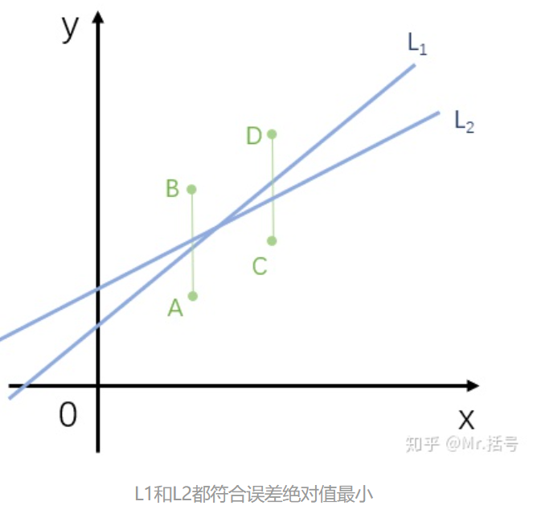</p>
<h4 id="最小二乘求解方便">最小二乘求解方便</h4>
<p>后来上了吴恩达老师的机器学习课，知道了代价函数的概念，寻找代价函数最小值的最简单的方法就是<strong>求导</strong>。最小二乘法的代价函数就是 RSS/MSE，由于这里采用平方和（二次函数），<strong>求导会直接变成一次函数</strong>。而如果使用残差的绝对值的和，根本无法进行简单的求导，就无法简单地得到最优解的公式（而且绝对值在 x = 0 处不可导）。</p>
<h4 id="最小二乘估计结果与正态分布假设下的最大似然估计结果相同">最小二乘估计结果与正态分布假设下的最大似然估计结果相同</h4>
<p>可以证明，当误差服从正态分布时，最大似然法估计结果和最小二乘相同（注意最小二乘与最大似然是截然不同的两种思想，两种方法。最小二乘没有对观测值的分布做假设）。下方证明参考<a target="_blank" rel="noopener" href="https://rayleizhu.github.io/2018/12/16/%E6%9C%80%E5%B0%8F%E4%BA%8C%E4%B9%98%E6%B3%95%E4%B8%BA%E4%BB%80%E4%B9%88%E4%BD%BF%E7%94%A8%E5%B9%B3%E6%96%B9%E8%AF%AF%E5%B7%AE/">最小二乘法为什么使用平方误差</a> 。</p>
<p>当你用线性回归拟合数据时，其实模型包括了两部分，回归项和残差项：</p>
<p style=""></p><p>之后我们用<strong>最大似然方法</strong>来估计参数，假设样本数目为n，似然函数表达式如下 (给定一组参数下得到这些观测值的似然值，等于得到这些残差的似然值)：</p>
<p style=""></p><p>我们需要找到使得似然函数最大的一组参数。</p>
<p>假设残差独立同分布于正态分布 N(0, σ<sup>2</sup>) ，单个残差的概率密度函数如下：</p>
<p style=""></p><p>多个残差服从多元正态分布，联合概率密度函数如下：</p>
<p style=""></p><p>因此这个问题就转换成了求使得**联合概率密度函数<code>f(ε)</code>最大 **的一组参数，这组参数就是最大似然法的估计参数。仔细查看 **联合概率密度函数<code>f(ε)</code> **的式子，不难发现该式最大时，即误差平方和最小。</p>
<p style=""></p><p>因此当<strong>残差符合正态分布</strong>时，最小二乘法的参数估计值与最大似然法一致，最小二乘法的参数估计值就是最可能的参数估计值。</p>
<h3 id="为什么不用三次方，平方和？">为什么不用三次方，平方和？</h3>
<p>为什么最小二乘法要用最小误差平方和来拟合（为什么不用立方和，或者开方和）?  首先你要保证误差项永远是正数，因此三次方和其他奇数次方不成立。对于四次项及更高的偶数次项，效果还没有最小二乘好，因为会<strong>放大极端值的影响</strong>。开方更不可能了，因为残差可能是负数，无法求开方。</p>
<h2 id="参数估计准确性">参数估计准确性</h2>
<p>我们使用的模型为</p>
<p></p>
<p>这里的<strong>残差项包含了所有我们模型中没有考虑到的地方</strong>，比如Y 和 X 的关系不是线性的，还有其他的影响因素，存在测量误差等等。</p>
<p>为了估计参数的估计值与真实值之间的误差，我们需要计算两个参数估计值的标准误，使用下列公式（缺证明）</p>
<p></p>
<p>这里 σ2 是残差方差，是未知的。残差标准差 σ 可以用 RSE (residual standard error) 来估计（缺证明）。</p>
<p></p>
<p>知道了标准误，我们可以计算<strong>β0、β1的置信区间</strong>，例如 β1 的 95%的置信区间为：</p>
<p></p>
<p>如果  β1 的 95%的置信区间 <strong>包含 0</strong>，那说明不能拒绝  β1  = 0 的原假设，我们认为不存在线性相关。</p>
<p>我们也可以通过 t 检验得到 P值。构建 t 统计量如下（自由度 n-2）：</p>
<p></p>
<p>同理可以检验β0 估计值的P值（零假设：β0 = 0），但实际上截距的显著性没啥大的意义，主要还是看 β1。如果  β1 的 P值小于 0.05，我们认为  β1 ≠ 0。</p>
<h2 id="模型准确性">模型准确性</h2>
<p>上面是得到估计的两个参数的准确性，这里我们想知道，我们构建的简单线性模型与数据的契合程度（<em>which the model fits the data</em>）。</p>
<p>线性模型一般用两个指标， <em>residual standard error</em>(RSE) 和 R<sup>2</sup> 。</p>
<h3 id="RSE">RSE</h3>
<p></p>
<p>RSE 是<strong>残差的标准误的估计值</strong>，它表示<strong>预测值与真实值的平均偏差量</strong>（这句话需要理解标准误的概念：标准误是样本统计量的标准差，均值为真值，结合标准差的公式，可知标准误就是预测值与真实值的平均偏差量（绝对值），所以一般提供参数估计值的时候，都会写成 参数估计值±<strong>标准误</strong>的形式）。</p>
<p>RSE 是最直接说明模型准确性的统计量，它的缺点是有单位，是一个绝对值，仅仅是RSE你不知道到底是大还是小，所以你还得和因变量的均值啥的进行比较才知道相对大小。</p>
<h3 id="R-sup-2-sup">R<sup>2</sup></h3>
<p>R<sup>2</sup> 指的是因变量方差能够被线性模型解释的比例，始终在0和1之间，是一个相对值，越大越好。公式如下：</p>
<p></p>
<p>其中<abbr title="total sum of squares">TSS</abbr> 计算如下，表示因变量的总的方差。</p>
<p></p>
<p>R<sup>2</sup> 比 RSE 更容易解释，因此更常用，但是还是面临一个问题，<strong>R<sup>2</sup> 多大才算结果很好呢？<strong>这可能得根据实际情况来定，在我们一般的实验中，实际上往往还有很多</strong>未测量的影响因素</strong>，所以 RSS 可能比较大，这时可能 R<sup>2</sup> 哪怕比较小可能也说明有用。</p>
<h1>多重线性回归</h1>
<p>简单线性回归只有一个自变量，但在实际情况中，我们往往有多个自变量（即生活中其实几乎不存在简单线性回归的应用场景）。例如，如果我们有三个影响因素，我们如何同时分析这三个影响因素呢？</p>
<p>一种思路是我们分别做上次简单的线性回归，但是这种思路无法令人满意。首先，如果给定一组三个自变量的值，我们无法给出因变量的预测值；其次，每一次简单回归都忽视了其他两个影响因素的作用，这可能会带来严重的误判。更好的解决思路是同时将多个自变量均放到线性回归的模型中。</p>
<p>ISL 书中提到了一个例子，销量和三种媒体预算的回归分析。在简单线性回归下，报纸的作用是显著的，如下图。</p>
<p>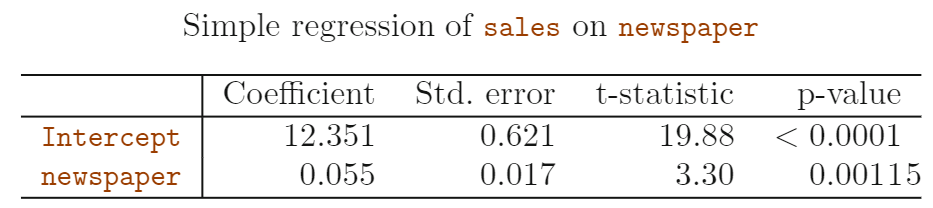</p>
<p>但是，同时考虑三种媒体后，报纸的P值是不显著的。这说明简单线性回归和多重线性回归的结果是不一样的。这种差距的出现的原因是，简单回归得到的<strong>斜率</strong>是不考虑其他因素（TV 和 radio）下得到的，而多重回归得到的<strong>斜率</strong>是<strong>保持 TV 和 radio 固定不变</strong>的基础上计算得到的。</p>
<p>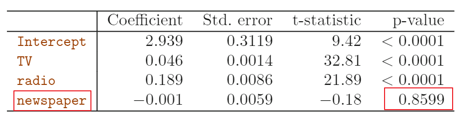</p>
<p>这种情况说明了什么呢，说明这三个自变量之间并不是互相独立的，通过下面的相关矩阵我们可以看到，radio 和 newspaper 的相关系数为0.35，表示当投资人在 radio advertising 花更多的钱的同时，存在一种趋势在 newspaper advertising 上也花更多的钱。因此，我们对 newspaper 进行简单回归时得到的显著性，<strong>实际不是 newspaper 的作用，而是 radio 因素的作用</strong>。</p>
<p>这样的例子实际上比比皆是。ISL 提了一个离谱的例子来说明这一点。如果我们计算<strong>沙滩冰淇淋销量</strong>对<strong>鲨鱼伤人事件的数量</strong>求回归，我们应该能得到一个正向的关系，类似于上面的 newpaper 的例子。但是这实际是很荒谬的，这两个事件不存在因果关系，<strong>你无法通过禁止销售冰淇淋来减少鲨鱼伤人的事件</strong>。实际上是高温天气促使了人们去海边，从而导致更多的冰淇淋销量和鲨鱼伤人事件。<strong>如果你同时考虑冰淇淋销量和天气，对鲨鱼伤人事件做多重回归，你就会发现冰淇淋销量不再是一个显著的影响因素</strong>。</p>
<h2 id="决定重要的影响因素">决定重要的影响因素</h2>
<p>当我们有多个影响因素时，很有可能所有的影响因素都和因变量是有联系的，但是因变量可能仅仅是由其中的一小部分自变量决定的（相关不等于因果，比如上面的冰淇淋销量的例子）。我们把如何挑选自变量的过程称为 <em>variable selection</em>。</p>
<p>理想情况下，我们可以通过<strong>穷举</strong>所有的模型，每种模型均包含一部分的自变量。通过对比所有模型的表现，我们就可以得到最佳的自变量的集合。例如假如我们手上总共有2个可选的自变量X1 X2，那么总共就有4种可能的模型，（1）不包含任何自变量 ；（2）包含X1 ；（3）包含X2；（4）包含X1和X2。但是我们用什么指标来判断不同模型的优劣呢？<strong>这里有很多的判定模型优劣的统计量，比如<abbr title="Akaike information criterion">AIC</abbr>， <abbr title="Bayesian information criterion">BIC</abbr>  , 校正后R<sup>2</sup> 等。</strong></p>
<h3 id="为什么使用校正后的R-sup-2-sup">为什么使用校正后的R<sup>2</sup></h3>
<p>我们看R<sup>2</sup> 的计算公式，可以看到 TSS 是固定值。如果你增加了变量后（比如原来只包含X1，到包含X1和X2），<strong>残差平方和只会减少</strong>（这就是overfitting的原理，哪怕仅仅是增加了无关变量，也会造成与本次数据的拟合程度“变好”）。这导致增加了变量后，R<sup>2</sup>只会进一步增加。</p>
<p></p>
<p>校正后的R<sup>2</sup>的公式如下，考虑了自变量个数的影响。可以看到，校正后的R<sup>2</sup> 随着自变量个数的增加而降低，并且始终低于未校正的R<sup>2</sup>。</p>
<p>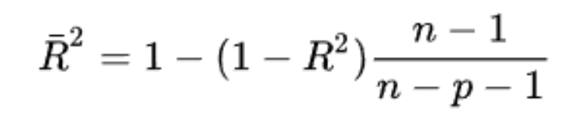</p>
<p>ISL 还提到了了使用 RSE 来校正自变量个数的影响。</p>
<p></p>
<h3 id="三种经典的挑选变量的思路">三种经典的挑选变量的思路</h3>
<ul>
<li><em>Forward selection</em>:  先从<em>null model</em> (没有任何变量的模型)出发，对所有的候选因素（假设 <em>p</em> 个）各做一次简单回归，然后挑选结果中 RSS 最低的变量加入到模型中。然后我们将剩下的 <em>p</em>-1 个候选因素，挨个加入到目前的模型中，再挑选结果中 RSS 最低的变量加入到模型中。一直循环下去，知道达到了某个终止条件。</li>
<li><em>Backward selection</em>:  首先将所有的变量均加入到模型中，然后移除其中 P值最大的变量，我们就得到了一个 <em>p</em>-1个变量的模型。循环往复直到达到终止条件（比如所有剩下的变量的P值均低于某个值）。</li>
<li><em>Mixed selection</em>: 结合了上述的两个方法，我们先从空的模型出发，就像第一种方法的示例，不停地往里加变量，直到最佳。在加变量的过程中，我们观察有没有变量的P值变大并且超出了我们设定的阈值，如果存在这种现象，我们就从模型中移除这个变量（backward）。我们一直重复这种添加变量和删除变量的操作，直到最终实现<strong>所有剩下的变量的P值均很低，所有剔除的变量只要加入到模型中就会有一个很大的P值</strong>。</li>
</ul>
<p>如果变量的个数超过了记录数，那么我们无法用 <em>Backward selection</em> (因为将所有变量均加入到模型中，会发生<a target="_blank" rel="noopener" href="https://zh.wikipedia.org/wiki/%E7%BB%B4%E6%95%B0%E7%81%BE%E9%9A%BE">维数灾难</a>)，此时 <em>Forward selection</em> 是可用的。但是<strong><em>Forward selection</em> 是一种贪婪算法</strong>，早期加入的变量可能是多余的，而  <em>Mixed selection</em> 算法修正了这一点。</p>
<h2 id="变量之间是否存在互作">变量之间是否存在互作</h2>
<p>还是采用上面三种媒介的例子，我们已经确定了 newpaper 没有作用， TV  和 radio 对 sales 有作用，那是不是模型就是下面的形式呢？</p>
<figure class="highlight plain"><table><tr><td class="gutter"><pre><span class="line">1</span><br></pre></td><td class="code"><pre><span class="line">Y &#x3D; β0 + β1*TV + β2*radio + e</span><br></pre></td></tr></table></figure>
<p>我们可以通过这个模型画出一个三维图，图中的平面为预测值。我们可以看到当主要的钱都投向一种媒体时，销量会低于预测值；而如果我们均衡投资这两种媒体，销量会高于预测值（虽然我没有很好的看懂这个三维图）。这说明<strong>TV 和 radio 这两个因素之间存在互作。</strong></p>
<p>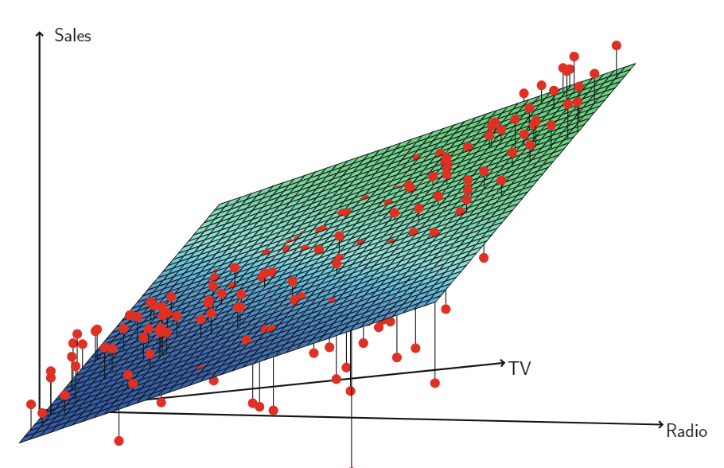</p>
<h2 id="预测的不确定性">预测的不确定性</h2>
<p>一旦我们得到了最终的多重线性回归模型，我们就可以基于一套自变量的值来预测反应变量的值。但是，我们所做的预测至少存在三种不确定性。</p>
<ol>
<li>
<p>我们得到的仅仅是 β0, β1, β2……等参数的估计值。这些参数的估计值与真实值存在差距，这种差距是<strong>可消除误差(<em>reducible error</em>)</strong> 的一种。我们统计计算一个 <em><strong>confidence interval</strong></em> 来决定估计参数得到的预测值与真实参数得到的预测值的差距。</p>
</li>
<li>
<p>第二种不确定性是由于线性模型仅仅是对实际数据的一个近似，这种带来的错误我们称之为<em><strong>model bias</strong></em> 。</p>
</li>
<li>
<p>即使我们知道真实的模型 f(x)（我们知道所有参数的真实值），我们也不能完全精确地预测因变量，因为还存在<strong>随机误差(<em>random error</em>)</strong>，这种属于<strong>不可消除误差(<em>irreducible error</em>)</strong>。真实模型的预测值与真实值之间的差距，用<em><strong>prediction intervals</strong></em> 来评价。<em>prediction intervals</em> 通常比 <em>confidence intervals</em> 更宽， 因为 <em>prediction intervals</em> 不仅包括了可消除误差，也包含了不可预测误差（ <em>prediction intervals</em> 包含了 <em>confidence interval</em> ）。下面这段话解释地更明确一点：</p>
<p>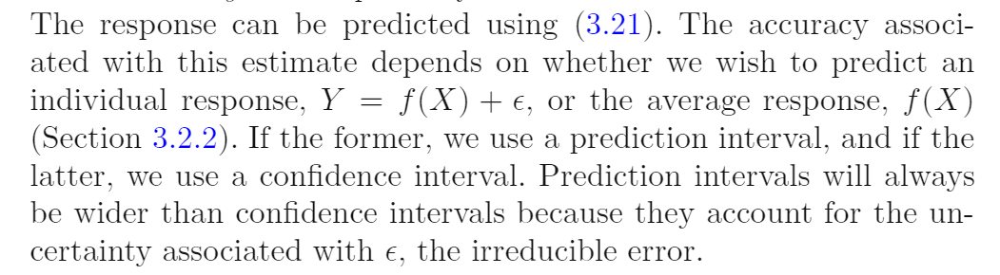</p>
</li>
</ol>
<h1>线性回归潜在的问题</h1>
<h2 id="1-自变量与因变量之间为非线性关系">1 自变量与因变量之间为非线性关系</h2>
<p>线性回归假设因变量与自变量之间存在直接的线性关系。如果因变量与自变量之间不是线性关系，那么线性回归的准确性会显著降低。</p>
<p>我们一般通过<strong>残差图</strong>来确定非线性关系。如果是简单线性回归，横坐标可以是自变量X，纵坐标是残差e；但是如果是多重线性回归，由于存在多个自变量，横坐标改为因变量的预测值。</p>
<p>下边左图为简单线性回归的残差图，可以看到残差不是均匀地分布在均值为0这条线地上下两侧，说明存在非线性关系。右图通过<strong>多项式回归</strong>，残差图的结果变好了很多，虽然看上去还是有一点非随机分布。</p>
<p>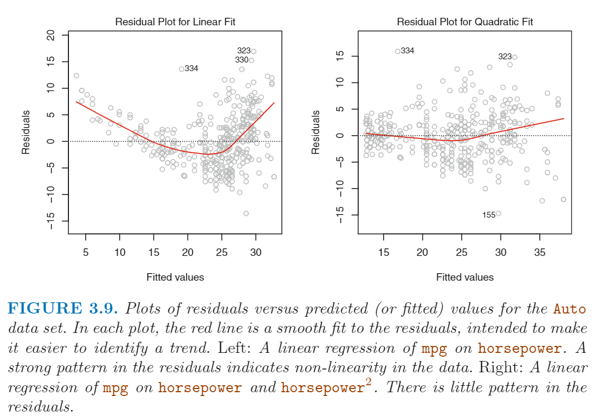</p>
<h2 id="2-残差项的相关">2 残差项的相关</h2>
<p>线性回归的一个重要的假设是残差项，e<sub>1</sub>,e<sub>2</sub>,e<sub>3</sub>…… e<sub>n</sub> 之间是不相关的。这句话的含义是，如果残差项是不相关的，那么某一个残差项的值不受其他残差项的影响。ISL 原文如下：</p>
<blockquote>
<p>For instance, if the errors are uncorrelated, then the fact that ε<sub>i</sub> is positive provides little or no information about the sign of ε<sub>i+1</sub>.</p>
</blockquote>
<p>预测参数或预测值的<strong>标准误</strong>都是基于残差不相关的假设计算得到的。<strong>如果实际上残差项之间存在相关，那么标准误倾向于被低估</strong>（缺解释），因此置信区间也会比正常情况下更窄，因此 p值会更低，容易出现<strong>假阳性</strong>。</p>
<p>下面这段话举了个例子，但是我没理解。这里假如我们不小心把数据重复了一遍（本来是n条数据，现在是2n条数据），参数估计的置信区间会缩减 √2 。</p>
<p>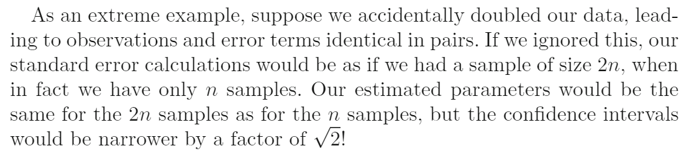</p>
<p>**什么时候会出现残差项的相关？**这种情况频繁出现在 <em>time series</em> 数据，也有在不同的时间点去观测得到的数据。在很多情况下，相邻时间观测到的记录之间会有正相关的残差项。为了确定这种情况，我们可以画一个横坐标是时间的残差图，如果残差项之间是不相关的，你就不会观测到明显的模式（残差应该是忽上忽下）；相反，如果残差项之间是正相反的，你可以会发现相邻时间的残差会倾向于有相似的值。</p>
<p>下图就体现了这一点，最上面是没有残差相关的图，越往下残差相关越高，我们可以看到很清晰的模式 - 相邻的点之间倾向于有相似的值。</p>
<p>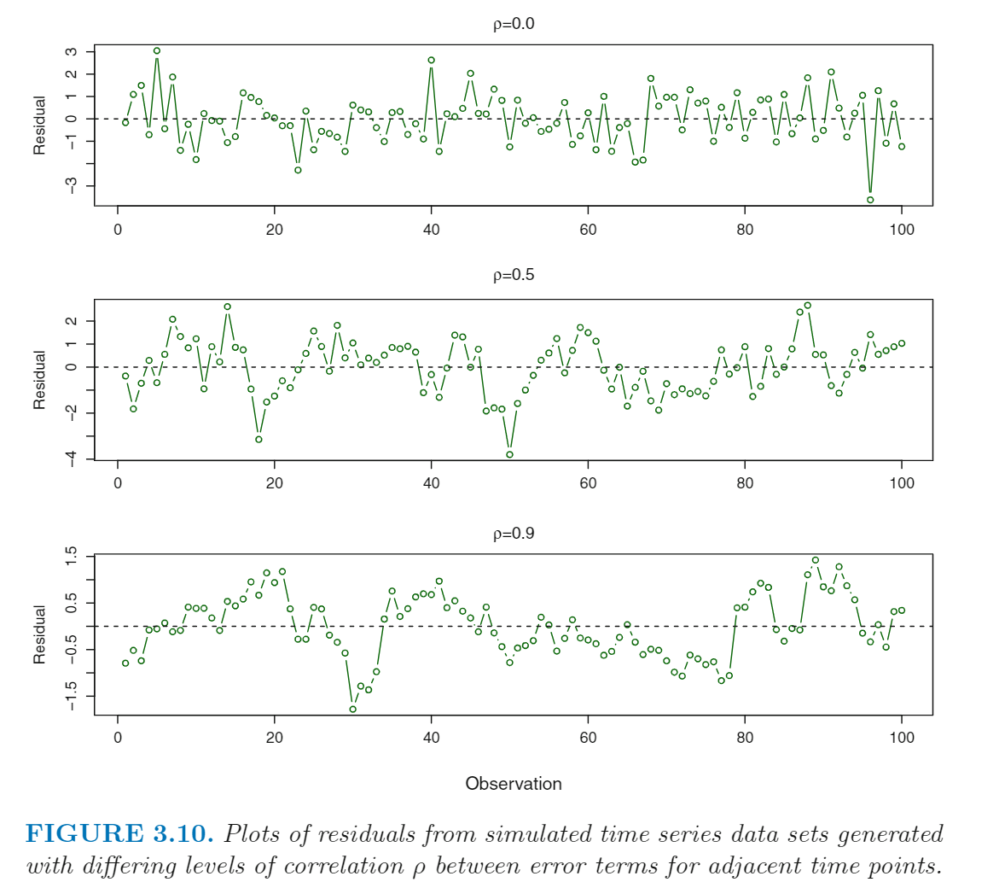</p>
<p>除了  <em>time series</em> 数据以外，其他数据也可能出现残差相关。举个例子，假设我们有一个研究通过体重去预测一个人的身高。如果有一些研究个体来自于相同的家庭，或吃相同的饮食，又或者面临某些相同的环境因素，那么残差不相关的假设就可能被打破。</p>
<p>一般来说，<strong>残差不相关</strong>的假设对于线性回归和其他统计方法是非常重要的。<strong>良好的实验设计</strong>对于减少残差不相关的风险至关重要。</p>
<h3 id="为什么会出现残差相关？">为什么会出现残差相关？</h3>
<p>因为<strong>残差是个筐，啥都往里装</strong>。我们的模型中所有没有考虑到的影响因素都会包含在这个残差里。实际上我们的模型不可能包含所有的影响因素，我们也不可能收集到所有影响因素的数据，所以我感觉残差相关是不可能完全避免的，或多或少有一点，只要不是很严重。</p>
<p>所以<strong>实验设计</strong>很重要，你要事先把重要的影响因素考虑到，而且把这些数据收集到。如果没有收集到相应的数据，貌似都无法发现残差相关，比如上面的 <em>time series</em> 数据，如果你没有搜集每个数据的时间信息，你都没法画上面的残差图。你不知道就等于没有了。</p>
<h2 id="3-残差方差不齐性">3 残差方差不齐性</h2>
<p>线性回归的另一个重要的假设是所有残差项均有一个固定的方差。我们计算标准误、置信区间等都依赖于这个假设。</p>
<p>但不幸地是，残差项的方差不是固定的，才是通常的情况。比如，残差方差可能会随着因变量值的提高而提高。我们可以通过残差图来发现这一点，比如下图的左图。<strong>当面临这种情况时，一个可能的解决思路是将反应变量Y 转换为 log(Y)  或 √Y</strong> ，这两个函数对于较大的值都会有一个很好的收缩效应，从而导致方差不齐性的改善。下图的右图就展示了转换后的残差图，我们可以看到方差不齐性的结果大大改善了（残差的宽度都差不多了），但是存在轻微的非线性关系。</p>
<p>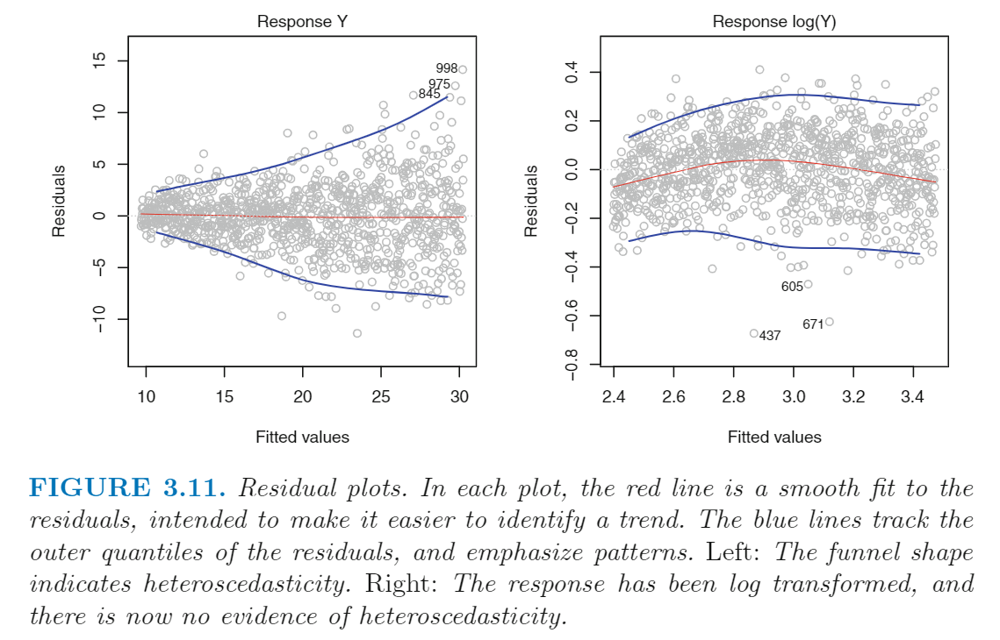</p>
<h2 id="4-Outliers">4 Outliers</h2>
<p><strong>Outliers 的定义是这个点的真实值与预测值偏差很大</strong>。Outliers 出现的原因有很多，比如错误记录。</p>
<p>下图中的红点（观测值为20）就是一个典型的Outlier。左边图中的红线是包含了Outlier的回归线，蓝色虚线是剔除了Outlier的回归线，我们可以看到移除或不移除这个Outlier对参数估计的影响很小。</p>
<p>但是Outliers 还会造成另外的问题。比如，在这个例子中，如果包括Outlier 计算得到的 RSE 为 1.09 ，如果剔除Outlier 得到的 RSE 为 0.77 。因为 RSE 在计算置信区间和 p值时均会用到，这样因为一个点导致RSE剧增会影响到回归方差拟合效果的解释。相似地，加入这个 Outlier， R<sup>2</sup> 从 0.892 降低到 0.805。</p>
<p>我们可以通过残差图来找到Outlier。在本例中我们轻松地找到这个Outlier，但是在实际应用中，我们很难决定到底偏离多少才可以视为一个 Outlier。为了解决这个问题，我们可以画图<em><strong>studentized residuals</strong></em> 图，纵坐标时残差除以它的标准误估计值。如果学生残差超过3，我们一般就认为可能是Outlier。在下图的右图中，我们发现这个Outlier的学生残差超过了6，而其他点均在 -2 与 2 之间。</p>
<p>如果你相信Outlier的出现是由于<strong>数据记录或收集时出错</strong>，那么解决办法就是移除这个观测值。但是你需要担心，Outlier的出现也可能是说明你的<strong>模型不完善</strong>，比如缺了一个影响因子。</p>
<p>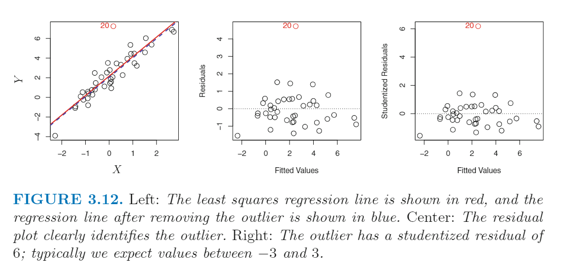</p>
<h2 id="5-High-Leverage-Points">5 High Leverage Points</h2>
<p><em><strong>High Leverage Points</strong></em> 仅指<strong>拥有异常的 x<sub>i</sub> 的观测值</strong>。例如，下图中的观测值 41 就是一个 <em>High Leverage Point</em>。 左图中的红线为包含这个点的回归直线，蓝色虚线是剔除了这个点的回归直线。我们可以看到， <em>High Leverage Point</em> 的影响很大，因此找 <em>High Leverage Point</em> 很重要。</p>
<p>对于简单线性回归， <em>High Leverage Point</em> 很容易找到，我们可以直接从 X-Y 图中直接看出。但是多重线性回归存在多个因变量，有可能一个观测值的<strong>所有的自变量单独看都在合理的范围</strong>，但是<strong>这一组自变量的组合是异常的</strong>。下图中间的图就显示了这一点，这是一个有两个自变量(X1, X2)的回归。很多观测值的两个自变量均落在蓝色虚线框定的椭圆中，但是这个红色的点不在这个范围内，虽然这个点的 X1 和 X2 值单独看都不是异常的值。**因此对于多重回归，如果仅仅看单个自变量是否存在 <em>High Leverage Point</em>，我们可能会漏掉一些 <em>High Leverage Point</em>。 ** 但是对于超过2个变量的多重回归模型，如果能够同时查看多个自变量组合的 <em>High Leverage Point</em>  就是一个问题，因为你没法针对2维以上的变量进行画图。</p>
<p>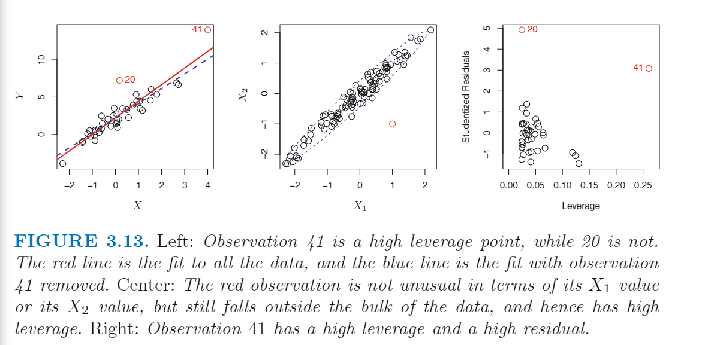</p>
<p>为了确定一个观测值的 leverage，我们可以计算一个 <em>leverage statistic</em> 。这个值越大说明 leverage 程度越高。对于一个简单线性回归，公式如下（多重回归的公式未给）：</p>
<p>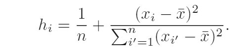</p>
<p>这个统计量的值在 1/n 与 1 之间，而且所有的观测值的  <em>leverage statistic</em> 的均值是 (p+1)/n 。所以如果一个观测值的  <em>leverage statistic</em> 远超均值，我们就可以怀疑这是一个  <em>High Leverage Point</em></p>
<p>上图 3.13 中的右图是 学生残差 vs h<sub>i</sub>  的散点图。观测值41 的 h<sub>i</sub> 和 学生残差均特别高，说明**这个点即是   <em>High Leverage Point</em>  ，也是一个 outlier ** 。这种情况是非常危险的组合，会对回归结果造成很大的影响，相比之下观测值20 虽然是一个 outlier, 但是 leverage 很低，最起码对回归方程没什么影响。</p>
<h2 id="6-Collinearity">6  Collinearity</h2>
<p><em>Collinearity</em> 表示<strong>两个或更多个自变量之间具有紧密的相关关系</strong>。<em>Collinearity</em> 可以用下图来表示，左图中的两个变量之间表现出来没有明显的关系，而右图的两个变量之间存在<strong>高度</strong>的相关关系（我不知道这个等高图为什么可以这么解释）。</p>
<p>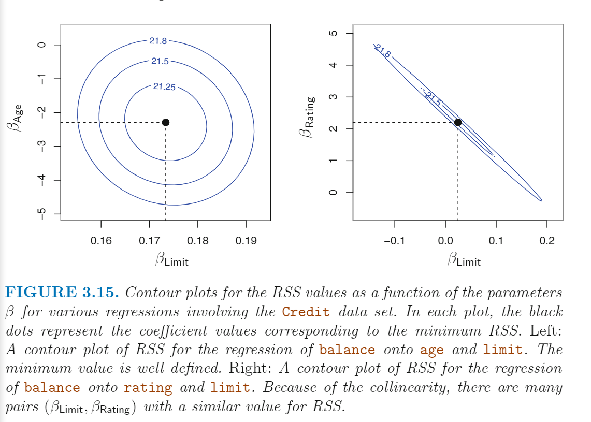</p>
<p><em>Collinearity</em> 的影响在于无非区分开多个自变量对因变量的影响程度。比如右图中，RSS最低的（β<sub>Limit</sub> , β<sub>Rating</sub>）有很多个，他们在一个狭长的椭圆当中，这导致了参数估计的不确定性。</p>
<p><em>Collinearity</em> 会降低回归参数估计的准确性，导致斜率估计的标准误增加，因此 P 值会增加，会导致 power（正确地拒绝原假设的概率） 降低。下图就是两次回归得到的回归系数和 P值，我们可以看到由于存在 <em>Collinearity</em> ，导致 limit 因素第二次分析时变得不显著。</p>
<p>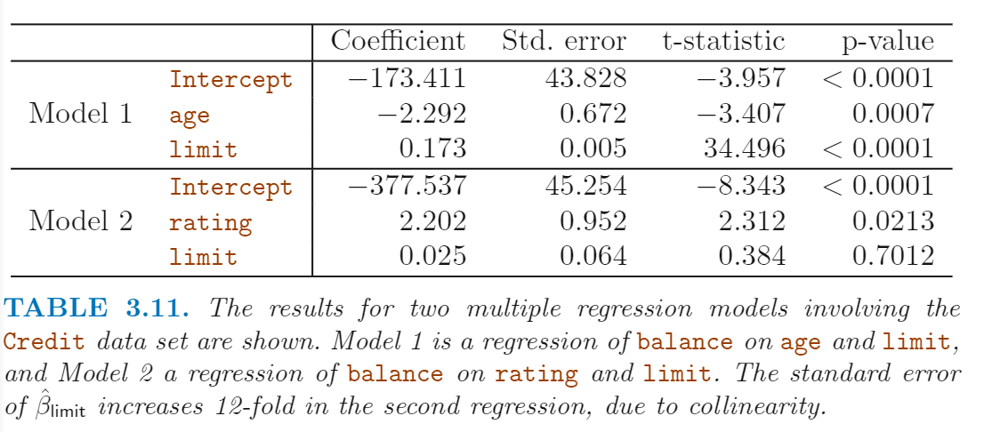</p>
<p>因此<strong>我们需要在进行回归分析前进行 <em>Collinearity</em> 的检测</strong>。一个简单的思路是看<strong>自变量之间的相关矩阵</strong>，看是否存在相关系数很高的情况。但是有可能存在一种情况，就是自变量之间不存在两两之间的强相关，但是存在三个及以上的变量之间的相关（例如 X1 = a + bX2 + cX3）。我们把这种情况称为 <em><strong>multicollinearity</strong></em> 。因此我们不采用自变量的相关矩阵，我们引入了一个新的统计量来检测 <em>Collinearity</em>，就是 <abbr title="variance inflation factor">VIF</abbr> 。定义如下：</p>
<blockquote>
<p>The VIF is  the ratio of the variance of ˆβ<sub>j</sub> when fitting the full model divided by the variance of ˆβ<sub>j</sub> if fit on its own.</p>
</blockquote>
<p>VIF 的最小值为1， 说明完全没有<em>Collinearity</em> ，一般来说自变量之间存在一定的 <em>Collinearity</em> , 一般我们认为 VIF 超过 5 或 10 就说明存在严重的 <em>Collinearity</em> 。对于每个变量的 VIF 计算公式为</p>
<p>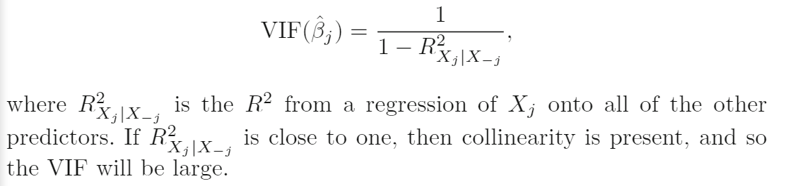</p>
<p>在上面的例子中，对 age, rating  和 limit 这三个变量做 VIF 分析，计算结果分别为 1.01， 160.67 和 160.59 。</p>
<p>如果面临 <em>Collinearity</em>  的问题，有两个简单的思路：<strong>一是删除其中一个变量</strong>，这通常不会导致模型拟合程度的降低，因为变量之间的信息是冗余的；<strong>二是合并共显性的变量为一个变量</strong>。</p>
<h1>R代码实现</h1>
<h2 id="简单线性回归">简单线性回归</h2>
<p>回归分析</p>
<figure class="highlight r"><table><tr><td class="gutter"><pre><span class="line">1</span><br><span class="line">2</span><br><span class="line">3</span><br><span class="line">4</span><br><span class="line">5</span><br><span class="line">6</span><br></pre></td><td class="code"><pre><span class="line"><span class="comment"># 简单回归</span></span><br><span class="line">library(MASS)</span><br><span class="line">library(ISLR)</span><br><span class="line"><span class="comment">## 采用MASS包的Boston数据集</span></span><br><span class="line">lm.fit = lm(medv~lstat, data = Boston)</span><br><span class="line">summary(lm.fit) <span class="comment">#各种回归的信息</span></span><br></pre></td></tr></table></figure>
<p>回归分析结果</p>
<figure class="highlight plain"><table><tr><td class="gutter"><pre><span class="line">1</span><br><span class="line">2</span><br><span class="line">3</span><br><span class="line">4</span><br><span class="line">5</span><br><span class="line">6</span><br><span class="line">7</span><br><span class="line">8</span><br><span class="line">9</span><br><span class="line">10</span><br><span class="line">11</span><br><span class="line">12</span><br><span class="line">13</span><br><span class="line">14</span><br><span class="line">15</span><br><span class="line">16</span><br><span class="line">17</span><br></pre></td><td class="code"><pre><span class="line">Call:</span><br><span class="line">lm(formula &#x3D; medv ~ lstat, data &#x3D; Boston)</span><br><span class="line"></span><br><span class="line">Residuals:</span><br><span class="line">    Min      1Q  Median      3Q     Max </span><br><span class="line">-15.168  -3.990  -1.318   2.034  24.500 </span><br><span class="line"></span><br><span class="line">Coefficients:</span><br><span class="line">            Estimate Std. Error t value Pr(&gt;|t|)    </span><br><span class="line">(Intercept) 34.55384    0.56263   61.41   &lt;2e-16 ***</span><br><span class="line">lstat       -0.95005    0.03873  -24.53   &lt;2e-16 ***</span><br><span class="line">---</span><br><span class="line">Signif. codes:  0 ‘***’ 0.001 ‘**’ 0.01 ‘*’ 0.05 ‘.’ 0.1 ‘ ’ 1</span><br><span class="line"></span><br><span class="line">Residual standard error: 6.216 on 504 degrees of freedom</span><br><span class="line">Multiple R-squared:  0.5441,	Adjusted R-squared:  0.5432 </span><br><span class="line">F-statistic: 601.6 on 1 and 504 DF,  p-value: &lt; 2.2e-16</span><br></pre></td></tr></table></figure>
<p>只看系数</p>
<figure class="highlight r"><table><tr><td class="gutter"><pre><span class="line">1</span><br><span class="line">2</span><br><span class="line">3</span><br></pre></td><td class="code"><pre><span class="line">&gt; coef(lm.fit)</span><br><span class="line">(Intercept)       lstat </span><br><span class="line"> <span class="number">34.5538409</span>  -<span class="number">0.9500494</span> </span><br></pre></td></tr></table></figure>
<p>查看系数的置信区间（confidence interval ）</p>
<figure class="highlight r"><table><tr><td class="gutter"><pre><span class="line">1</span><br><span class="line">2</span><br><span class="line">3</span><br><span class="line">4</span><br></pre></td><td class="code"><pre><span class="line">&gt; confint(lm.fit)</span><br><span class="line">                <span class="number">2.5</span> %     97.5 %</span><br><span class="line">(Intercept) <span class="number">33.448457</span> <span class="number">35.6592247</span></span><br><span class="line">lstat       -<span class="number">1.026148</span> -<span class="number">0.8739505</span></span><br></pre></td></tr></table></figure>
<p>画 x-y 散点图，并添加回归线</p>
<figure class="highlight r"><table><tr><td class="gutter"><pre><span class="line">1</span><br><span class="line">2</span><br></pre></td><td class="code"><pre><span class="line">plot(Boston$lstat, Boston$medv)</span><br><span class="line">abline(lm.fit)</span><br></pre></td></tr></table></figure>
<p>我们可以查看检查线性回归是否正常的图</p>
<figure class="highlight plain"><table><tr><td class="gutter"><pre><span class="line">1</span><br><span class="line">2</span><br></pre></td><td class="code"><pre><span class="line">par(mfrow&#x3D;c(2,2))</span><br><span class="line">plot(lm.fit) # 直接画4副图</span><br></pre></td></tr></table></figure>
<p>绘图如下：上方左图就是正常的残差图，可以查看<strong>非线性</strong>，<strong>残差异方差</strong>等，我们可以看到这里存在非线性关系；上方右图就是QQ图，用于<strong>检验残差是否符合正态分布</strong>；下方左图也是一个残差图，不过就是把纵坐标改成了 <em><strong>standardized residuals</strong></em>（缺公式）；下方右图用于判断 <em>Outlier</em> 和  <em>High Leverage Point</em>  ，横坐标是 leverage， 通常大于 4/n (n 是样本点的数目)，就算 <em>High Leverage Point</em> ； 纵轴是residuals，通常小样本大于2，大样本大于4的算作outliers 。</p>
<p>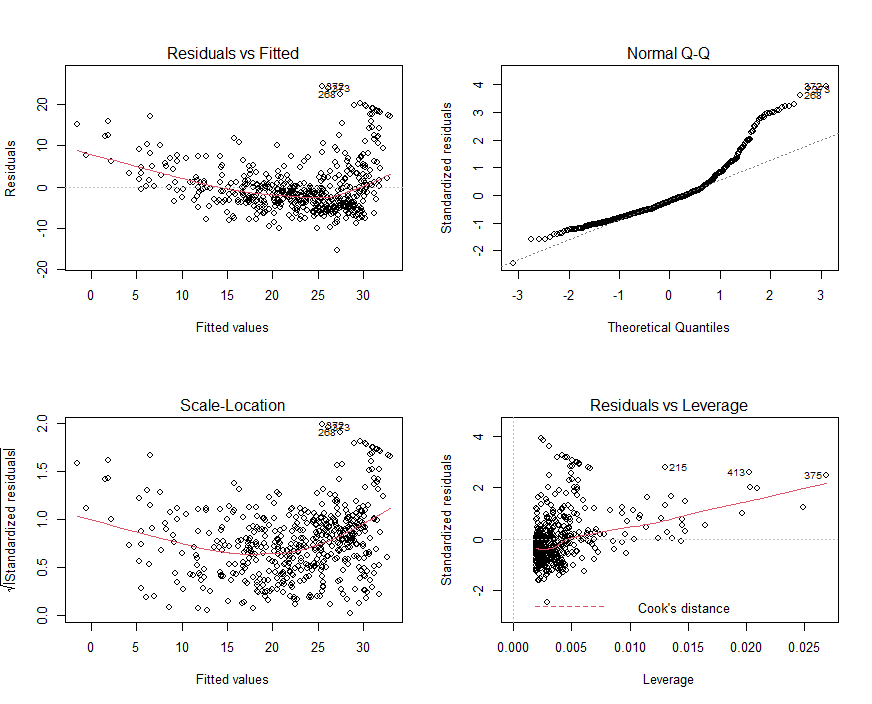</p>
<h2 id="多重线性回归">多重线性回归</h2>
<p>看一下数据结构</p>
<figure class="highlight r"><table><tr><td class="gutter"><pre><span class="line">1</span><br><span class="line">2</span><br><span class="line">3</span><br><span class="line">4</span><br><span class="line">5</span><br><span class="line">6</span><br><span class="line">7</span><br><span class="line">8</span><br><span class="line">9</span><br><span class="line">10</span><br><span class="line">11</span><br><span class="line">12</span><br><span class="line">13</span><br><span class="line">14</span><br><span class="line">15</span><br><span class="line">16</span><br></pre></td><td class="code"><pre><span class="line">&gt; str(Boston)</span><br><span class="line"><span class="string">&#x27;data.frame&#x27;</span>:	<span class="number">506</span> obs. of  <span class="number">14</span> variables:</span><br><span class="line"> $ crim   : num  <span class="number">0.00632</span> <span class="number">0.02731</span> <span class="number">0.02729</span> <span class="number">0.03237</span> <span class="number">0.06905</span> ...</span><br><span class="line"> $ zn     : num  <span class="number">18</span> <span class="number">0</span> <span class="number">0</span> <span class="number">0</span> <span class="number">0</span> <span class="number">0</span> <span class="number">12.5</span> <span class="number">12.5</span> <span class="number">12.5</span> <span class="number">12.5</span> ...</span><br><span class="line"> $ indus  : num  <span class="number">2.31</span> <span class="number">7.07</span> <span class="number">7.07</span> <span class="number">2.18</span> <span class="number">2.18</span> <span class="number">2.18</span> <span class="number">7.87</span> <span class="number">7.87</span> <span class="number">7.87</span> <span class="number">7.87</span> ...</span><br><span class="line"> $ chas   : int  <span class="number">0</span> <span class="number">0</span> <span class="number">0</span> <span class="number">0</span> <span class="number">0</span> <span class="number">0</span> <span class="number">0</span> <span class="number">0</span> <span class="number">0</span> <span class="number">0</span> ...</span><br><span class="line"> $ nox    : num  <span class="number">0.538</span> <span class="number">0.469</span> <span class="number">0.469</span> <span class="number">0.458</span> <span class="number">0.458</span> <span class="number">0.458</span> <span class="number">0.524</span> <span class="number">0.524</span> <span class="number">0.524</span> <span class="number">0.524</span> ...</span><br><span class="line"> $ rm     : num  <span class="number">6.58</span> <span class="number">6.42</span> <span class="number">7.18</span> <span class="number">7</span> <span class="number">7.15</span> ...</span><br><span class="line"> $ age    : num  <span class="number">65.2</span> <span class="number">78.9</span> <span class="number">61.1</span> <span class="number">45.8</span> <span class="number">54.2</span> <span class="number">58.7</span> <span class="number">66.6</span> <span class="number">96.1</span> <span class="number">100</span> <span class="number">85.9</span> ...</span><br><span class="line"> $ dis    : num  <span class="number">4.09</span> <span class="number">4.97</span> <span class="number">4.97</span> <span class="number">6.06</span> <span class="number">6.06</span> ...</span><br><span class="line"> $ rad    : int  <span class="number">1</span> <span class="number">2</span> <span class="number">2</span> <span class="number">3</span> <span class="number">3</span> <span class="number">3</span> <span class="number">5</span> <span class="number">5</span> <span class="number">5</span> <span class="number">5</span> ...</span><br><span class="line"> $ tax    : num  <span class="number">296</span> <span class="number">242</span> <span class="number">242</span> <span class="number">222</span> <span class="number">222</span> <span class="number">222</span> <span class="number">311</span> <span class="number">311</span> <span class="number">311</span> <span class="number">311</span> ...</span><br><span class="line"> $ ptratio: num  <span class="number">15.3</span> <span class="number">17.8</span> <span class="number">17.8</span> <span class="number">18.7</span> <span class="number">18.7</span> <span class="number">18.7</span> <span class="number">15.2</span> <span class="number">15.2</span> <span class="number">15.2</span> <span class="number">15.2</span> ...</span><br><span class="line"> $ black  : num  <span class="number">397</span> <span class="number">397</span> <span class="number">393</span> <span class="number">395</span> <span class="number">397</span> ...</span><br><span class="line"> $ lstat  : num  <span class="number">4.98</span> <span class="number">9.14</span> <span class="number">4.03</span> <span class="number">2.94</span> <span class="number">5.33</span> ...</span><br><span class="line"> $ medv   : num  <span class="number">24</span> <span class="number">21.6</span> <span class="number">34.7</span> <span class="number">33.4</span> <span class="number">36.2</span> <span class="number">28.7</span> <span class="number">22.9</span> <span class="number">27.1</span> <span class="number">16.5</span> <span class="number">18.9</span> ...</span><br></pre></td></tr></table></figure>
<p>两个回归因素，lstat 和 age</p>
<figure class="highlight r"><table><tr><td class="gutter"><pre><span class="line">1</span><br><span class="line">2</span><br><span class="line">3</span><br><span class="line">4</span><br><span class="line">5</span><br><span class="line">6</span><br><span class="line">7</span><br><span class="line">8</span><br><span class="line">9</span><br><span class="line">10</span><br><span class="line">11</span><br><span class="line">12</span><br><span class="line">13</span><br><span class="line">14</span><br><span class="line">15</span><br><span class="line">16</span><br><span class="line">17</span><br><span class="line">18</span><br><span class="line">19</span><br><span class="line">20</span><br><span class="line">21</span><br></pre></td><td class="code"><pre><span class="line">&gt; lm.fit=lm(medv~lstat+age,data=Boston)</span><br><span class="line">&gt; summary(lm.fit)</span><br><span class="line"></span><br><span class="line">Call:</span><br><span class="line">lm(formula = medv ~ lstat + age, data = Boston)</span><br><span class="line"></span><br><span class="line">Residuals:</span><br><span class="line">    Min      <span class="number">1</span>Q  Median      <span class="number">3</span>Q     Max </span><br><span class="line">-<span class="number">15.981</span>  -<span class="number">3.978</span>  -<span class="number">1.283</span>   <span class="number">1.968</span>  <span class="number">23.158</span> </span><br><span class="line"></span><br><span class="line">Coefficients:</span><br><span class="line">            Estimate Std. Error t value Pr(&gt;|t|)    </span><br><span class="line">(Intercept) <span class="number">33.22276</span>    <span class="number">0.73085</span>  <span class="number">45.458</span>  &lt; <span class="number">2e-16</span> ***</span><br><span class="line">lstat       -<span class="number">1.03207</span>    <span class="number">0.04819</span> -<span class="number">21.416</span>  &lt; <span class="number">2e-16</span> ***</span><br><span class="line">age          <span class="number">0.03454</span>    <span class="number">0.01223</span>   <span class="number">2.826</span>  <span class="number">0.00491</span> ** </span><br><span class="line">---</span><br><span class="line">Signif. codes:  <span class="number">0</span> ‘***’ <span class="number">0.001</span> ‘**’ <span class="number">0.01</span> ‘*’ <span class="number">0.05</span> ‘.’ <span class="number">0.1</span> ‘ ’ <span class="number">1</span></span><br><span class="line"></span><br><span class="line">Residual standard error: <span class="number">6.173</span> on <span class="number">503</span> degrees of freedom</span><br><span class="line">Multiple R-squared:  <span class="number">0.5513</span>,	Adjusted R-squared:  <span class="number">0.5495</span> </span><br><span class="line"><span class="built_in">F</span>-statistic:   <span class="number">309</span> on <span class="number">2</span> and <span class="number">503</span> DF,  p-value: &lt; <span class="number">2.2e-16</span></span><br></pre></td></tr></table></figure>
<p>Boston 数据集总共有 13 个自变量，我们可以通过这种简写方式，直接使用所有的自变量（前提是除了因变量以外，其他全是自变量）。</p>
<figure class="highlight r"><table><tr><td class="gutter"><pre><span class="line">1</span><br><span class="line">2</span><br><span class="line">3</span><br><span class="line">4</span><br><span class="line">5</span><br><span class="line">6</span><br><span class="line">7</span><br><span class="line">8</span><br><span class="line">9</span><br><span class="line">10</span><br><span class="line">11</span><br><span class="line">12</span><br><span class="line">13</span><br><span class="line">14</span><br><span class="line">15</span><br><span class="line">16</span><br><span class="line">17</span><br><span class="line">18</span><br><span class="line">19</span><br><span class="line">20</span><br><span class="line">21</span><br><span class="line">22</span><br><span class="line">23</span><br><span class="line">24</span><br><span class="line">25</span><br><span class="line">26</span><br><span class="line">27</span><br><span class="line">28</span><br><span class="line">29</span><br><span class="line">30</span><br><span class="line">31</span><br><span class="line">32</span><br><span class="line">33</span><br></pre></td><td class="code"><pre><span class="line">&gt; lm.fit=lm(medv~.,data=Boston)</span><br><span class="line">&gt; summary(lm.fit)</span><br><span class="line"></span><br><span class="line">Call:</span><br><span class="line">lm(formula = medv ~ ., data = Boston)</span><br><span class="line"></span><br><span class="line">Residuals:</span><br><span class="line">    Min      <span class="number">1</span>Q  Median      <span class="number">3</span>Q     Max </span><br><span class="line">-<span class="number">15.595</span>  -<span class="number">2.730</span>  -<span class="number">0.518</span>   <span class="number">1.777</span>  <span class="number">26.199</span> </span><br><span class="line"></span><br><span class="line">Coefficients:</span><br><span class="line">              Estimate Std. Error t value Pr(&gt;|t|)    </span><br><span class="line">(Intercept)  <span class="number">3.646e+01</span>  <span class="number">5.103e+00</span>   <span class="number">7.144</span> <span class="number">3.28e-12</span> ***</span><br><span class="line">crim        -<span class="number">1.080e-01</span>  <span class="number">3.286e-02</span>  -<span class="number">3.287</span> <span class="number">0.001087</span> ** </span><br><span class="line">zn           <span class="number">4.642e-02</span>  <span class="number">1.373e-02</span>   <span class="number">3.382</span> <span class="number">0.000778</span> ***</span><br><span class="line">indus        <span class="number">2.056e-02</span>  <span class="number">6.150e-02</span>   <span class="number">0.334</span> <span class="number">0.738288</span>    </span><br><span class="line">chas         <span class="number">2.687e+00</span>  <span class="number">8.616e-01</span>   <span class="number">3.118</span> <span class="number">0.001925</span> ** </span><br><span class="line">nox         -<span class="number">1.777e+01</span>  <span class="number">3.820e+00</span>  -<span class="number">4.651</span> <span class="number">4.25e-06</span> ***</span><br><span class="line">rm           <span class="number">3.810e+00</span>  <span class="number">4.179e-01</span>   <span class="number">9.116</span>  &lt; <span class="number">2e-16</span> ***</span><br><span class="line">age          <span class="number">6.922e-04</span>  <span class="number">1.321e-02</span>   <span class="number">0.052</span> <span class="number">0.958229</span>    </span><br><span class="line">dis         -<span class="number">1.476e+00</span>  <span class="number">1.995e-01</span>  -<span class="number">7.398</span> <span class="number">6.01e-13</span> ***</span><br><span class="line">rad          <span class="number">3.060e-01</span>  <span class="number">6.635e-02</span>   <span class="number">4.613</span> <span class="number">5.07e-06</span> ***</span><br><span class="line">tax         -<span class="number">1.233e-02</span>  <span class="number">3.760e-03</span>  -<span class="number">3.280</span> <span class="number">0.001112</span> ** </span><br><span class="line">ptratio     -<span class="number">9.527e-01</span>  <span class="number">1.308e-01</span>  -<span class="number">7.283</span> <span class="number">1.31e-12</span> ***</span><br><span class="line">black        <span class="number">9.312e-03</span>  <span class="number">2.686e-03</span>   <span class="number">3.467</span> <span class="number">0.000573</span> ***</span><br><span class="line">lstat       -<span class="number">5.248e-01</span>  <span class="number">5.072e-02</span> -<span class="number">10.347</span>  &lt; <span class="number">2e-16</span> ***</span><br><span class="line">---</span><br><span class="line">Signif. codes:  <span class="number">0</span> ‘***’ <span class="number">0.001</span> ‘**’ <span class="number">0.01</span> ‘*’ <span class="number">0.05</span> ‘.’ <span class="number">0.1</span> ‘ ’ <span class="number">1</span></span><br><span class="line"></span><br><span class="line">Residual standard error: <span class="number">4.745</span> on <span class="number">492</span> degrees of freedom</span><br><span class="line">Multiple R-squared:  <span class="number">0.7406</span>,	Adjusted R-squared:  <span class="number">0.7338</span> </span><br><span class="line"><span class="built_in">F</span>-statistic: <span class="number">108.1</span> on <span class="number">13</span> and <span class="number">492</span> DF,  p-value: &lt; <span class="number">2.2e-16</span></span><br><span class="line"></span><br></pre></td></tr></table></figure>
<p>我们可以通过car包的 vif() 函数计算 各个因子的VIF，这里可以看到 rad 和 tax 这两个因素的 VIF 比较高。</p>
<figure class="highlight r"><table><tr><td class="gutter"><pre><span class="line">1</span><br><span class="line">2</span><br><span class="line">3</span><br><span class="line">4</span><br><span class="line">5</span><br><span class="line">6</span><br><span class="line">7</span><br><span class="line">8</span><br><span class="line">9</span><br><span class="line">10</span><br><span class="line">11</span><br><span class="line">12</span><br><span class="line">13</span><br><span class="line">14</span><br></pre></td><td class="code"><pre><span class="line">&gt; library(car)</span><br><span class="line">载入需要的程辑包：carData</span><br><span class="line">Registered S3 methods overwritten by <span class="string">&#x27;tibble&#x27;</span>:</span><br><span class="line">  method     from  </span><br><span class="line">  format.tbl pillar</span><br><span class="line">  print.tbl  pillar</span><br><span class="line">Warning messages:</span><br><span class="line">1: 程辑包‘car’是用R版本<span class="number">4.0</span>.3 来建造的 </span><br><span class="line">2: 程辑包‘carData’是用R版本<span class="number">4.0</span>.3 来建造的 </span><br><span class="line">&gt; vif(lm.fit)</span><br><span class="line">    crim       zn    indus     chas      nox       rm      age      dis      rad      tax </span><br><span class="line">1.792192 <span class="number">2.298758</span> <span class="number">3.991596</span> <span class="number">1.073995</span> <span class="number">4.393720</span> <span class="number">1.933744</span> <span class="number">3.100826</span> <span class="number">3.955945</span> <span class="number">7.484496</span> <span class="number">9.008554</span> </span><br><span class="line"> ptratio    black    lstat </span><br><span class="line">1.799084 <span class="number">1.348521</span> <span class="number">2.941491</span> </span><br></pre></td></tr></table></figure>
<p>使用除了某一个因子外的其他所有因子的回归（采用 - 号），例如剔除 age 因子。</p>
<figure class="highlight r"><table><tr><td class="gutter"><pre><span class="line">1</span><br><span class="line">2</span><br></pre></td><td class="code"><pre><span class="line">&gt;lm.fit1 = lm(medv∼.-age,data=Boston)</span><br><span class="line">&gt;summary(lm.fit1)</span><br></pre></td></tr></table></figure>
<h2 id="互作项">互作项</h2>
<p>回归模型中 ， <code>lstat:black</code> 表示新增一个 <code>lstat</code> 和 <code>black</code> 的互作项。<code>lstat*age</code> 表示同时<code>lstat</code>, <code>age</code> 和他们之间的互作项，是 <code>lstat+age+lstat:age</code> 的简写。</p>
<figure class="highlight r"><table><tr><td class="gutter"><pre><span class="line">1</span><br><span class="line">2</span><br><span class="line">3</span><br><span class="line">4</span><br><span class="line">5</span><br><span class="line">6</span><br><span class="line">7</span><br><span class="line">8</span><br><span class="line">9</span><br><span class="line">10</span><br><span class="line">11</span><br><span class="line">12</span><br><span class="line">13</span><br><span class="line">14</span><br><span class="line">15</span><br><span class="line">16</span><br><span class="line">17</span><br><span class="line">18</span><br><span class="line">19</span><br><span class="line">20</span><br><span class="line">21</span><br></pre></td><td class="code"><pre><span class="line">&gt; summary(lm(medv~lstat*age,data=Boston))</span><br><span class="line"></span><br><span class="line">Call:</span><br><span class="line">lm(formula = medv ~ lstat * age, data = Boston)</span><br><span class="line"></span><br><span class="line">Residuals:</span><br><span class="line">    Min      <span class="number">1</span>Q  Median      <span class="number">3</span>Q     Max </span><br><span class="line">-<span class="number">15.806</span>  -<span class="number">4.045</span>  -<span class="number">1.333</span>   <span class="number">2.085</span>  <span class="number">27.552</span> </span><br><span class="line"></span><br><span class="line">Coefficients:</span><br><span class="line">              Estimate Std. Error t value Pr(&gt;|t|)    </span><br><span class="line">(Intercept) <span class="number">36.0885359</span>  <span class="number">1.4698355</span>  <span class="number">24.553</span>  &lt; <span class="number">2e-16</span> ***</span><br><span class="line">lstat       -<span class="number">1.3921168</span>  <span class="number">0.1674555</span>  -<span class="number">8.313</span> <span class="number">8.78e-16</span> ***</span><br><span class="line">age         -<span class="number">0.0007209</span>  <span class="number">0.0198792</span>  -<span class="number">0.036</span>   <span class="number">0.9711</span>    </span><br><span class="line">lstat:age    <span class="number">0.0041560</span>  <span class="number">0.0018518</span>   <span class="number">2.244</span>   <span class="number">0.0252</span> *  </span><br><span class="line">---</span><br><span class="line">Signif. codes:  <span class="number">0</span> ‘***’ <span class="number">0.001</span> ‘**’ <span class="number">0.01</span> ‘*’ <span class="number">0.05</span> ‘.’ <span class="number">0.1</span> ‘ ’ <span class="number">1</span></span><br><span class="line"></span><br><span class="line">Residual standard error: <span class="number">6.149</span> on <span class="number">502</span> degrees of freedom</span><br><span class="line">Multiple R-squared:  <span class="number">0.5557</span>,	Adjusted R-squared:  <span class="number">0.5531</span> </span><br><span class="line"><span class="built_in">F</span>-statistic: <span class="number">209.3</span> on <span class="number">3</span> and <span class="number">502</span> DF,  p-value: &lt; <span class="number">2.2e-16</span></span><br></pre></td></tr></table></figure>
<h2 id="自变量的非线性转换">自变量的非线性转换</h2>
<p>我们可以创建一个新的自变量 X<sup>2</sup>，采用 <code>I(X^2)</code> 函数。</p>
<figure class="highlight r"><table><tr><td class="gutter"><pre><span class="line">1</span><br><span class="line">2</span><br><span class="line">3</span><br><span class="line">4</span><br><span class="line">5</span><br><span class="line">6</span><br><span class="line">7</span><br><span class="line">8</span><br><span class="line">9</span><br><span class="line">10</span><br><span class="line">11</span><br><span class="line">12</span><br><span class="line">13</span><br><span class="line">14</span><br><span class="line">15</span><br><span class="line">16</span><br><span class="line">17</span><br><span class="line">18</span><br><span class="line">19</span><br><span class="line">20</span><br><span class="line">21</span><br><span class="line">22</span><br></pre></td><td class="code"><pre><span class="line">&gt; lm.fit2 = lm(medv~lstat+I(lstat^<span class="number">2</span>), data = Boston)</span><br><span class="line">&gt; summary(lm.fit2)</span><br><span class="line"></span><br><span class="line">Call:</span><br><span class="line">lm(formula = medv ~ lstat + I(lstat^<span class="number">2</span>), data = Boston)</span><br><span class="line"></span><br><span class="line">Residuals:</span><br><span class="line">     Min       <span class="number">1</span>Q   Median       <span class="number">3</span>Q      Max </span><br><span class="line">-<span class="number">15.2834</span>  -<span class="number">3.8313</span>  -<span class="number">0.5295</span>   <span class="number">2.3095</span>  <span class="number">25.4148</span> </span><br><span class="line"></span><br><span class="line">Coefficients:</span><br><span class="line">             Estimate Std. Error t value Pr(&gt;|t|)    </span><br><span class="line">(Intercept) <span class="number">42.862007</span>   <span class="number">0.872084</span>   <span class="number">49.15</span>   &lt;<span class="number">2e-16</span> ***</span><br><span class="line">lstat       -<span class="number">2.332821</span>   <span class="number">0.123803</span>  -<span class="number">18.84</span>   &lt;<span class="number">2e-16</span> ***</span><br><span class="line">I(lstat^<span class="number">2</span>)   <span class="number">0.043547</span>   <span class="number">0.003745</span>   <span class="number">11.63</span>   &lt;<span class="number">2e-16</span> ***</span><br><span class="line">---</span><br><span class="line">Signif. codes:  <span class="number">0</span> ‘***’ <span class="number">0.001</span> ‘**’ <span class="number">0.01</span> ‘*’ <span class="number">0.05</span> ‘.’ <span class="number">0.1</span> ‘ ’ <span class="number">1</span></span><br><span class="line"></span><br><span class="line">Residual standard error: <span class="number">5.524</span> on <span class="number">503</span> degrees of freedom</span><br><span class="line">Multiple R-squared:  <span class="number">0.6407</span>,	Adjusted R-squared:  <span class="number">0.6393</span> </span><br><span class="line"><span class="built_in">F</span>-statistic: <span class="number">448.5</span> on <span class="number">2</span> and <span class="number">503</span> DF,  p-value: &lt; <span class="number">2.2e-16</span></span><br><span class="line"></span><br></pre></td></tr></table></figure>
<p>我们可以看到二次项的P值也是显著的，说明模型拟合结果有所改善。我们可以使用 <code>anova()</code> 函数来比对两个模型。</p>
<p>这里 Model 1 表示原来的线性模型，Model 2 表示二次项回归模型。这个  <code>anova()</code> 函数执行了一个比对两个模型的假设检验，零假设是两个模型拟合程度一致，备择假设是更全的模型更好。这里F统计量是135， 相应的 P值也很低，说明二次项模型拟合程度更好。</p>
<figure class="highlight r"><table><tr><td class="gutter"><pre><span class="line">1</span><br><span class="line">2</span><br><span class="line">3</span><br><span class="line">4</span><br><span class="line">5</span><br><span class="line">6</span><br><span class="line">7</span><br><span class="line">8</span><br><span class="line">9</span><br><span class="line">10</span><br><span class="line">11</span><br></pre></td><td class="code"><pre><span class="line">&gt; lm.fit = lm(medv~lstat, data=Boston)</span><br><span class="line">&gt; anova(lm.fit, lm.fit2)</span><br><span class="line">Analysis of Variance Table</span><br><span class="line"></span><br><span class="line">Model <span class="number">1</span>: medv ~ lstat</span><br><span class="line">Model <span class="number">2</span>: medv ~ lstat + I(lstat^<span class="number">2</span>)</span><br><span class="line">  Res.Df   RSS Df Sum of Sq     <span class="built_in">F</span>    Pr(&gt;<span class="built_in">F</span>)    </span><br><span class="line">1    <span class="number">504</span> <span class="number">19472</span>                                 </span><br><span class="line">2    <span class="number">503</span> <span class="number">15347</span>  <span class="number">1</span>    <span class="number">4125.1</span> <span class="number">135.2</span> &lt; <span class="number">2.2e-16</span> ***</span><br><span class="line">---</span><br><span class="line">Signif. codes:  <span class="number">0</span> ‘***’ <span class="number">0.001</span> ‘**’ <span class="number">0.01</span> ‘*’ <span class="number">0.05</span> ‘.’ <span class="number">0.1</span> ‘ ’ <span class="number">1</span></span><br></pre></td></tr></table></figure>
<p>如果要建立<strong>三次型</strong>方程，我们可以新增一个变量 <code>I(X^3)</code> 。但是，这种写法比较啰嗦。一个更好的写法是使用<code>poly()</code> 函数来创建一个多项式。比如下面就会创建一个自由度为5的二次型拟合</p>
<figure class="highlight r"><table><tr><td class="gutter"><pre><span class="line">1</span><br><span class="line">2</span><br><span class="line">3</span><br><span class="line">4</span><br><span class="line">5</span><br><span class="line">6</span><br><span class="line">7</span><br><span class="line">8</span><br><span class="line">9</span><br><span class="line">10</span><br><span class="line">11</span><br><span class="line">12</span><br><span class="line">13</span><br><span class="line">14</span><br><span class="line">15</span><br><span class="line">16</span><br><span class="line">17</span><br><span class="line">18</span><br><span class="line">19</span><br><span class="line">20</span><br><span class="line">21</span><br><span class="line">22</span><br><span class="line">23</span><br><span class="line">24</span><br><span class="line">25</span><br></pre></td><td class="code"><pre><span class="line">&gt; lm.fit5 = lm(medv~poly(lstat,<span class="number">5</span>),data=Boston)</span><br><span class="line">&gt; summary(lm.fit5)</span><br><span class="line"></span><br><span class="line">Call:</span><br><span class="line">lm(formula = medv ~ poly(lstat, <span class="number">5</span>), data = Boston)</span><br><span class="line"></span><br><span class="line">Residuals:</span><br><span class="line">     Min       <span class="number">1</span>Q   Median       <span class="number">3</span>Q      Max </span><br><span class="line">-<span class="number">13.5433</span>  -<span class="number">3.1039</span>  -<span class="number">0.7052</span>   <span class="number">2.0844</span>  <span class="number">27.1153</span> </span><br><span class="line"></span><br><span class="line">Coefficients:</span><br><span class="line">                 Estimate Std. Error t value Pr(&gt;|t|)    </span><br><span class="line">(Intercept)       <span class="number">22.5328</span>     <span class="number">0.2318</span>  <span class="number">97.197</span>  &lt; <span class="number">2e-16</span> ***</span><br><span class="line">poly(lstat, <span class="number">5</span>)<span class="number">1</span> -<span class="number">152.4595</span>     <span class="number">5.2148</span> -<span class="number">29.236</span>  &lt; <span class="number">2e-16</span> ***</span><br><span class="line">poly(lstat, <span class="number">5</span>)<span class="number">2</span>   <span class="number">64.2272</span>     <span class="number">5.2148</span>  <span class="number">12.316</span>  &lt; <span class="number">2e-16</span> ***</span><br><span class="line">poly(lstat, <span class="number">5</span>)<span class="number">3</span>  -<span class="number">27.0511</span>     <span class="number">5.2148</span>  -<span class="number">5.187</span> <span class="number">3.10e-07</span> ***</span><br><span class="line">poly(lstat, <span class="number">5</span>)<span class="number">4</span>   <span class="number">25.4517</span>     <span class="number">5.2148</span>   <span class="number">4.881</span> <span class="number">1.42e-06</span> ***</span><br><span class="line">poly(lstat, <span class="number">5</span>)<span class="number">5</span>  -<span class="number">19.2524</span>     <span class="number">5.2148</span>  -<span class="number">3.692</span> <span class="number">0.000247</span> ***</span><br><span class="line">---</span><br><span class="line">Signif. codes:  <span class="number">0</span> ‘***’ <span class="number">0.001</span> ‘**’ <span class="number">0.01</span> ‘*’ <span class="number">0.05</span> ‘.’ <span class="number">0.1</span> ‘ ’ <span class="number">1</span></span><br><span class="line"></span><br><span class="line">Residual standard error: <span class="number">5.215</span> on <span class="number">500</span> degrees of freedom</span><br><span class="line">Multiple R-squared:  <span class="number">0.6817</span>,	Adjusted R-squared:  <span class="number">0.6785</span> </span><br><span class="line"><span class="built_in">F</span>-statistic: <span class="number">214.2</span> on <span class="number">5</span> and <span class="number">500</span> DF,  p-value: &lt; <span class="number">2.2e-16</span></span><br><span class="line"></span><br></pre></td></tr></table></figure>
<p>这里说明如果增加二次项，加到5， 可以增加模型的拟合程度。但是，进一步研究会发现，如果增加超过项数超过5的项，这些超过5的项的p值均不显著。</p>
<p>当然，除了使用二次项以外，我们还可以使用其他转换函数，比如<strong>log函数</strong>。</p>
<figure class="highlight r"><table><tr><td class="gutter"><pre><span class="line">1</span><br></pre></td><td class="code"><pre><span class="line">summary(lm(medv~<span class="built_in">log</span>(rm), data=Boston))</span><br></pre></td></tr></table></figure>
<h2 id="分类因子">分类因子</h2>
<p>这里我们用 <code>ISLR</code> 包的 <code>Carseats</code> 数据集。我们想要预测的变量是 <em>Sales</em></p>
<figure class="highlight r"><table><tr><td class="gutter"><pre><span class="line">1</span><br><span class="line">2</span><br><span class="line">3</span><br><span class="line">4</span><br><span class="line">5</span><br><span class="line">6</span><br><span class="line">7</span><br><span class="line">8</span><br><span class="line">9</span><br><span class="line">10</span><br><span class="line">11</span><br><span class="line">12</span><br><span class="line">13</span><br><span class="line">14</span><br><span class="line">15</span><br></pre></td><td class="code"><pre><span class="line">&gt; library(ISLR)</span><br><span class="line">&gt; fix(Carseats)</span><br><span class="line">&gt; str(Carseats)</span><br><span class="line"><span class="string">&#x27;data.frame&#x27;</span>:	<span class="number">400</span> obs. of  <span class="number">11</span> variables:</span><br><span class="line"> $ Sales      : num  <span class="number">9.5</span> <span class="number">11.22</span> <span class="number">10.06</span> <span class="number">7.4</span> <span class="number">4.15</span> ...</span><br><span class="line"> $ CompPrice  : num  <span class="number">138</span> <span class="number">111</span> <span class="number">113</span> <span class="number">117</span> <span class="number">141</span> <span class="number">124</span> <span class="number">115</span> <span class="number">136</span> <span class="number">132</span> <span class="number">132</span> ...</span><br><span class="line"> $ Income     : num  <span class="number">73</span> <span class="number">48</span> <span class="number">35</span> <span class="number">100</span> <span class="number">64</span> <span class="number">113</span> <span class="number">105</span> <span class="number">81</span> <span class="number">110</span> <span class="number">113</span> ...</span><br><span class="line"> $ Advertising: num  <span class="number">11</span> <span class="number">16</span> <span class="number">10</span> <span class="number">4</span> <span class="number">3</span> <span class="number">13</span> <span class="number">0</span> <span class="number">15</span> <span class="number">0</span> <span class="number">0</span> ...</span><br><span class="line"> $ Population : num  <span class="number">276</span> <span class="number">260</span> <span class="number">269</span> <span class="number">466</span> <span class="number">340</span> <span class="number">501</span> <span class="number">45</span> <span class="number">425</span> <span class="number">108</span> <span class="number">131</span> ...</span><br><span class="line"> $ Price      : num  <span class="number">120</span> <span class="number">83</span> <span class="number">80</span> <span class="number">97</span> <span class="number">128</span> <span class="number">72</span> <span class="number">108</span> <span class="number">120</span> <span class="number">124</span> <span class="number">124</span> ...</span><br><span class="line"> $ ShelveLoc  : Factor w/ <span class="number">3</span> levels <span class="string">&quot;Bad&quot;</span>,<span class="string">&quot;Good&quot;</span>,<span class="string">&quot;Medium&quot;</span>: <span class="number">1</span> <span class="number">2</span> <span class="number">3</span> <span class="number">3</span> <span class="number">1</span> <span class="number">1</span> <span class="number">3</span> <span class="number">2</span> <span class="number">3</span> <span class="number">3</span> ...</span><br><span class="line"> $ Age        : num  <span class="number">42</span> <span class="number">65</span> <span class="number">59</span> <span class="number">55</span> <span class="number">38</span> <span class="number">78</span> <span class="number">71</span> <span class="number">67</span> <span class="number">76</span> <span class="number">76</span> ...</span><br><span class="line"> $ Education  : num  <span class="number">17</span> <span class="number">10</span> <span class="number">12</span> <span class="number">14</span> <span class="number">13</span> <span class="number">16</span> <span class="number">15</span> <span class="number">10</span> <span class="number">10</span> <span class="number">17</span> ...</span><br><span class="line"> $ Urban      : Factor w/ <span class="number">2</span> levels <span class="string">&quot;No&quot;</span>,<span class="string">&quot;Yes&quot;</span>: <span class="number">2</span> <span class="number">2</span> <span class="number">2</span> <span class="number">2</span> <span class="number">2</span> <span class="number">1</span> <span class="number">2</span> <span class="number">2</span> <span class="number">1</span> <span class="number">1</span> ...</span><br><span class="line"> $ US         : Factor w/ <span class="number">2</span> levels <span class="string">&quot;No&quot;</span>,<span class="string">&quot;Yes&quot;</span>: <span class="number">2</span> <span class="number">2</span> <span class="number">2</span> <span class="number">2</span> <span class="number">1</span> <span class="number">2</span> <span class="number">1</span> <span class="number">2</span> <span class="number">1</span> <span class="number">2</span> ...</span><br></pre></td></tr></table></figure>
<p>这里包含了类似于 <code>ShelveLoc</code> 的分类变量。如果使用分类变量，R会<strong>自动转变为哑变量</strong>。下面我们进行包含了一些互作项的多重回归模型。</p>
<p>这里  <code>ShelveLoc</code>  生成了两个哑变量 ShelveLocGood 和 ShelveLocMedium ，Bad 水平视为基础水平。我们可以看到 Good 和 Medium 水平的斜率都是正数，且均显著，说明 Good 和 Medium 水平的因变量的均值均比 Bad 水平要高。</p>
<figure class="highlight r"><table><tr><td class="gutter"><pre><span class="line">1</span><br><span class="line">2</span><br><span class="line">3</span><br><span class="line">4</span><br><span class="line">5</span><br><span class="line">6</span><br><span class="line">7</span><br><span class="line">8</span><br><span class="line">9</span><br><span class="line">10</span><br><span class="line">11</span><br><span class="line">12</span><br><span class="line">13</span><br><span class="line">14</span><br><span class="line">15</span><br><span class="line">16</span><br><span class="line">17</span><br><span class="line">18</span><br><span class="line">19</span><br><span class="line">20</span><br><span class="line">21</span><br><span class="line">22</span><br><span class="line">23</span><br><span class="line">24</span><br><span class="line">25</span><br><span class="line">26</span><br><span class="line">27</span><br><span class="line">28</span><br><span class="line">29</span><br><span class="line">30</span><br><span class="line">31</span><br><span class="line">32</span><br></pre></td><td class="code"><pre><span class="line">&gt; lm.fit=lm(Sales~.+Income:Advertising +Price:Age,data=Carseats)</span><br><span class="line">&gt; summary(lm.fit)</span><br><span class="line"></span><br><span class="line">Call:</span><br><span class="line">lm(formula = Sales ~ . + Income:Advertising + Price:Age, data = Carseats)</span><br><span class="line"></span><br><span class="line">Residuals:</span><br><span class="line">    Min      <span class="number">1</span>Q  Median      <span class="number">3</span>Q     Max </span><br><span class="line">-<span class="number">2.9208</span> -<span class="number">0.7503</span>  <span class="number">0.0177</span>  <span class="number">0.6754</span>  <span class="number">3.3413</span> </span><br><span class="line"></span><br><span class="line">Coefficients:</span><br><span class="line">                     Estimate Std. Error t value Pr(&gt;|t|)    </span><br><span class="line">(Intercept)         <span class="number">6.5755654</span>  <span class="number">1.0087470</span>   <span class="number">6.519</span> <span class="number">2.22e-10</span> ***</span><br><span class="line">CompPrice           <span class="number">0.0929371</span>  <span class="number">0.0041183</span>  <span class="number">22.567</span>  &lt; <span class="number">2e-16</span> ***</span><br><span class="line">Income              <span class="number">0.0108940</span>  <span class="number">0.0026044</span>   <span class="number">4.183</span> <span class="number">3.57e-05</span> ***</span><br><span class="line">Advertising         <span class="number">0.0702462</span>  <span class="number">0.0226091</span>   <span class="number">3.107</span> <span class="number">0.002030</span> ** </span><br><span class="line">Population          <span class="number">0.0001592</span>  <span class="number">0.0003679</span>   <span class="number">0.433</span> <span class="number">0.665330</span>    </span><br><span class="line">Price              -<span class="number">0.1008064</span>  <span class="number">0.0074399</span> -<span class="number">13.549</span>  &lt; <span class="number">2e-16</span> ***</span><br><span class="line">ShelveLocGood       <span class="number">4.8486762</span>  <span class="number">0.1528378</span>  <span class="number">31.724</span>  &lt; <span class="number">2e-16</span> ***</span><br><span class="line">ShelveLocMedium     <span class="number">1.9532620</span>  <span class="number">0.1257682</span>  <span class="number">15.531</span>  &lt; <span class="number">2e-16</span> ***</span><br><span class="line">Age                -<span class="number">0.0579466</span>  <span class="number">0.0159506</span>  -<span class="number">3.633</span> <span class="number">0.000318</span> ***</span><br><span class="line">Education          -<span class="number">0.0208525</span>  <span class="number">0.0196131</span>  -<span class="number">1.063</span> <span class="number">0.288361</span>    </span><br><span class="line">UrbanYes            <span class="number">0.1401597</span>  <span class="number">0.1124019</span>   <span class="number">1.247</span> <span class="number">0.213171</span>    </span><br><span class="line">USYes              -<span class="number">0.1575571</span>  <span class="number">0.1489234</span>  -<span class="number">1.058</span> <span class="number">0.290729</span>    </span><br><span class="line">Income:Advertising  <span class="number">0.0007510</span>  <span class="number">0.0002784</span>   <span class="number">2.698</span> <span class="number">0.007290</span> ** </span><br><span class="line">Price:Age           <span class="number">0.0001068</span>  <span class="number">0.0001333</span>   <span class="number">0.801</span> <span class="number">0.423812</span>    </span><br><span class="line">---</span><br><span class="line">Signif. codes:  <span class="number">0</span> ‘***’ <span class="number">0.001</span> ‘**’ <span class="number">0.01</span> ‘*’ <span class="number">0.05</span> ‘.’ <span class="number">0.1</span> ‘ ’ <span class="number">1</span></span><br><span class="line"></span><br><span class="line">Residual standard error: <span class="number">1.011</span> on <span class="number">386</span> degrees of freedom</span><br><span class="line">Multiple R-squared:  <span class="number">0.8761</span>,	Adjusted R-squared:  <span class="number">0.8719</span> </span><br><span class="line"><span class="built_in">F</span>-statistic:   <span class="number">210</span> on <span class="number">13</span> and <span class="number">386</span> DF,  p-value: &lt; <span class="number">2.2e-16</span></span><br></pre></td></tr></table></figure>
 
      <!-- reward -->
      
      <div id="reword-out">
        <div id="reward-btn">
          打赏
        </div>
      </div>
      
    </div>
    

    <!-- copyright -->
    
    <div class="declare">
      <ul class="post-copyright">
        <li>
          <i class="ri-copyright-line"></i>
          <strong>版权声明： </strong>
          
          本博客所有文章除特别声明外，著作权归作者所有。转载请注明出处！
          
        </li>
      </ul>
    </div>
    
    <footer class="article-footer">
       
  <ul class="article-tag-list" itemprop="keywords"><li class="article-tag-list-item"><a class="article-tag-list-link" href="/tags/%E6%95%B0%E6%8D%AE%E5%88%86%E6%9E%90/" rel="tag">数据分析</a></li><li class="article-tag-list-item"><a class="article-tag-list-link" href="/tags/%E7%90%86%E8%AE%BA%E5%AD%A6%E4%B9%A0/" rel="tag">理论学习</a></li><li class="article-tag-list-item"><a class="article-tag-list-link" href="/tags/%E7%BA%BF%E6%80%A7%E6%A8%A1%E5%9E%8B/" rel="tag">线性模型</a></li></ul>

    </footer>
  </div>

   
  <nav class="article-nav">
    
      <a href="/posts/e4aae57/" class="article-nav-link">
        <strong class="article-nav-caption">上一篇</strong>
        <div class="article-nav-title">
          
            最小二乘的几何含义
          
        </div>
      </a>
    
    
      <a href="/posts/c2b5c4e7/" class="article-nav-link">
        <strong class="article-nav-caption">下一篇</strong>
        <div class="article-nav-title">什么是线性</div>
      </a>
    
  </nav>

   
<!-- valine评论 -->
<div id="vcomments-box">
  <div id="vcomments"></div>
</div>
<script src="//cdn1.lncld.net/static/js/3.0.4/av-min.js"></script>
<script src="https://cdn.jsdelivr.net/npm/valine@1.4.14/dist/Valine.min.js"></script>
<script>
  new Valine({
    el: "#vcomments",
    app_id: "yHN3kf7fHt5wvleM2DVoHLdY-gzGzoHsz",
    app_key: "RPIwmdftljIzOtAULwc7JCAp",
    path: window.location.pathname,
    avatar: "monsterid",
    placeholder: "靓仔，看完留个评论再走哇！\n只需要填入昵称和邮箱就可以了",
    recordIP: true,
  });
  const infoEle = document.querySelector("#vcomments .info");
  if (infoEle && infoEle.childNodes && infoEle.childNodes.length > 0) {
    infoEle.childNodes.forEach(function (item) {
      item.parentNode.removeChild(item);
    });
  }
</script>
<style>
  #vcomments-box {
    padding: 5px 30px;
  }

  @media screen and (max-width: 800px) {
    #vcomments-box {
      padding: 5px 0px;
    }
  }

  #vcomments-box #vcomments {
    background-color: #fff;
  }

  .v .vlist .vcard .vh {
    padding-right: 20px;
  }

  .v .vlist .vcard {
    padding-left: 10px;
  }
</style>

 
   
     
</article>

</section>
      <footer class="footer">
  <div class="outer">
    <ul>
      <li>
        Copyrights &copy;
        2019-2022
        <i class="ri-heart-fill heart_icon"></i> Vincere Zhou
      </li>
    </ul>
    <ul>
      <li>
        
        
        <span>
  <span><i class="ri-user-3-fill"></i>访问人数:<span id="busuanzi_value_site_uv"></span></s>
  <span class="division">|</span>
  <span><i class="ri-eye-fill"></i>浏览次数:<span id="busuanzi_value_page_pv"></span></span>
</span>
        
      </li>
    </ul>
    <ul>
      
    </ul>
    <ul>
      
    </ul>
    <ul>
      <li>
        <!-- cnzz统计 -->
        
      </li>
    </ul>

    <!-- 与只只在一起天数 -->
	<ul>
		<li><span id="lovetime_span"></span></li>
	</ul>
    <script type="text/javascript">			
        function show_runtime() {
            window.setTimeout("show_runtime()", 1000);
            X = new Date("03/04/2021 22:11:00");
            Y = new Date();
            T = (Y.getTime() - X.getTime());
            M = 24 * 60 * 60 * 1000;
            a = T / M;
            A = Math.floor(a);
            b = (a - A) * 24;
            B = Math.floor(b);
            c = (b - B) * 60;
            C = Math.floor((b - B) * 60);
            D = Math.floor((c - C) * 60);
            lovetime_span.innerHTML = "只只和男朋友在一起了 " + A + "天" + B + "小时" + C + "分" + D + "秒"
        }
        show_runtime();
    </script>

  </div>
</footer>
      <div class="float_btns">
        <div class="totop" id="totop">
  <i class="ri-arrow-up-line"></i>
</div>

      </div>
    </main>
    <aside class="sidebar on">
      <button class="navbar-toggle"></button>
<nav class="navbar">
  
  <div class="logo">
    <a href="/"></a>
  </div>
  
  <ul class="nav nav-main">
    
    <li class="nav-item">
      <a class="nav-item-link" href="/">主页</a>
    </li>
    
    <li class="nav-item">
      <a class="nav-item-link" href="/archives">归档</a>
    </li>
    
    <li class="nav-item">
      <a class="nav-item-link" href="/categories">分类</a>
    </li>
    
    <li class="nav-item">
      <a class="nav-item-link" href="/tags">标签</a>
    </li>
    
    <li class="nav-item">
      <a class="nav-item-link" href="/friends">友链</a>
    </li>
    
    <li class="nav-item">
      <a class="nav-item-link" href="/posts/ac7827ff">只只</a>
    </li>
    
    <li class="nav-item">
      <a class="nav-item-link" href="/about">关于</a>
    </li>
    
  </ul>
</nav>
<nav class="navbar navbar-bottom">
  <ul class="nav">
    <li class="nav-item">
      
      <a class="nav-item-link nav-item-search"  title="搜索">
        <i class="ri-search-line"></i>
      </a>
      
      
      <a class="nav-item-link" target="_blank" href="/atom.xml" title="RSS Feed">
        <i class="ri-rss-line"></i>
      </a>
      
    </li>
  </ul>
</nav>
<div class="search-form-wrap">
  <div class="local-search local-search-plugin">
  <input type="search" id="local-search-input" class="local-search-input" placeholder="Search...">
  <div id="local-search-result" class="local-search-result"></div>
</div>
</div>
    </aside>
    <script>
      if (window.matchMedia("(max-width: 768px)").matches) {
        document.querySelector('.content').classList.remove('on');
        document.querySelector('.sidebar').classList.remove('on');
      }
    </script>
    <div id="mask"></div>

<!-- #reward -->
<div id="reward">
  <span class="close"><i class="ri-close-line"></i></span>
  <p class="reward-p"><i class="ri-cup-line"></i>请我喝杯茶吧~</p>
  <div class="reward-box">
    
    <div class="reward-item">
      
      <span class="reward-type">支付宝</span>
    </div>
    
    
    <div class="reward-item">
      
      <span class="reward-type">微信</span>
    </div>
    
  </div>
</div>
    
<script src="/js/jquery-2.0.3.min.js"></script>


<script src="/js/lazyload.min.js"></script>

<!-- Tocbot -->


<script src="/js/tocbot.min.js"></script>

<script>
  tocbot.init({
    tocSelector: '.tocbot',
    contentSelector: '.article-entry',
    headingSelector: 'h1, h2, h3, h4, h5, h6',
    hasInnerContainers: true,
    scrollSmooth: true,
    scrollContainer: 'main',
    positionFixedSelector: '.tocbot',
    positionFixedClass: 'is-position-fixed',
    fixedSidebarOffset: 'auto'
  });
</script>

<script src="https://cdn.jsdelivr.net/npm/jquery-modal@0.9.2/jquery.modal.min.js"></script>
<link rel="stylesheet" href="https://cdn.jsdelivr.net/npm/jquery-modal@0.9.2/jquery.modal.min.css">
<script src="https://cdn.jsdelivr.net/npm/justifiedGallery@3.7.0/dist/js/jquery.justifiedGallery.min.js"></script>

<script src="/dist/main.js"></script>

<!-- ImageViewer -->

<!-- Root element of PhotoSwipe. Must have class pswp. -->
<div class="pswp" tabindex="-1" role="dialog" aria-hidden="true">

    <!-- Background of PhotoSwipe. 
         It's a separate element as animating opacity is faster than rgba(). -->
    <div class="pswp__bg"></div>

    <!-- Slides wrapper with overflow:hidden. -->
    <div class="pswp__scroll-wrap">

        <!-- Container that holds slides. 
            PhotoSwipe keeps only 3 of them in the DOM to save memory.
            Don't modify these 3 pswp__item elements, data is added later on. -->
        <div class="pswp__container">
            <div class="pswp__item"></div>
            <div class="pswp__item"></div>
            <div class="pswp__item"></div>
        </div>

        <!-- Default (PhotoSwipeUI_Default) interface on top of sliding area. Can be changed. -->
        <div class="pswp__ui pswp__ui--hidden">

            <div class="pswp__top-bar">

                <!--  Controls are self-explanatory. Order can be changed. -->

                <div class="pswp__counter"></div>

                <button class="pswp__button pswp__button--close" title="Close (Esc)"></button>

                <button class="pswp__button pswp__button--share" style="display:none" title="Share"></button>

                <button class="pswp__button pswp__button--fs" title="Toggle fullscreen"></button>

                <button class="pswp__button pswp__button--zoom" title="Zoom in/out"></button>

                <!-- Preloader demo http://codepen.io/dimsemenov/pen/yyBWoR -->
                <!-- element will get class pswp__preloader--active when preloader is running -->
                <div class="pswp__preloader">
                    <div class="pswp__preloader__icn">
                        <div class="pswp__preloader__cut">
                            <div class="pswp__preloader__donut"></div>
                        </div>
                    </div>
                </div>
            </div>

            <div class="pswp__share-modal pswp__share-modal--hidden pswp__single-tap">
                <div class="pswp__share-tooltip"></div>
            </div>

            <button class="pswp__button pswp__button--arrow--left" title="Previous (arrow left)">
            </button>

            <button class="pswp__button pswp__button--arrow--right" title="Next (arrow right)">
            </button>

            <div class="pswp__caption">
                <div class="pswp__caption__center"></div>
            </div>

        </div>

    </div>

</div>

<link rel="stylesheet" href="https://cdn.jsdelivr.net/npm/photoswipe@4.1.3/dist/photoswipe.min.css">
<link rel="stylesheet" href="https://cdn.jsdelivr.net/npm/photoswipe@4.1.3/dist/default-skin/default-skin.min.css">
<script src="https://cdn.jsdelivr.net/npm/photoswipe@4.1.3/dist/photoswipe.min.js"></script>
<script src="https://cdn.jsdelivr.net/npm/photoswipe@4.1.3/dist/photoswipe-ui-default.min.js"></script>

<script>
    function viewer_init() {
        let pswpElement = document.querySelectorAll('.pswp')[0];
        let $imgArr = document.querySelectorAll(('.article-entry img:not(.reward-img)'))

        $imgArr.forEach(($em, i) => {
            $em.onclick = () => {
                // slider展开状态
                // todo: 这样不好，后面改成状态
                if (document.querySelector('.left-col.show')) return
                let items = []
                $imgArr.forEach(($em2, i2) => {
                    let img = $em2.getAttribute('data-idx', i2)
                    let src = $em2.getAttribute('data-target') || $em2.getAttribute('src')
                    let title = $em2.getAttribute('alt')
                    // 获得原图尺寸
                    const image = new Image()
                    image.src = src
                    items.push({
                        src: src,
                        w: image.width || $em2.width,
                        h: image.height || $em2.height,
                        title: title
                    })
                })
                var gallery = new PhotoSwipe(pswpElement, PhotoSwipeUI_Default, items, {
                    index: parseInt(i)
                });
                gallery.init()
            }
        })
    }
    viewer_init()
</script>

<!-- MathJax -->

<script type="text/x-mathjax-config">
  MathJax.Hub.Config({
      tex2jax: {
          inlineMath: [ ['$','$'], ["\\(","\\)"]  ],
          processEscapes: true,
          skipTags: ['script', 'noscript', 'style', 'textarea', 'pre', 'code']
      }
  });

  MathJax.Hub.Queue(function() {
      var all = MathJax.Hub.getAllJax(), i;
      for(i=0; i < all.length; i += 1) {
          all[i].SourceElement().parentNode.className += ' has-jax';
      }
  });
</script>

<script src="https://cdn.jsdelivr.net/npm/mathjax@2.7.6/unpacked/MathJax.js?config=TeX-AMS-MML_HTMLorMML"></script>
<script>
  var ayerConfig = {
    mathjax: true
  }
</script>

<!-- Katex -->

<!-- busuanzi  -->


<script src="/js/busuanzi-2.3.pure.min.js"></script>


<!-- ClickLove -->

<!-- ClickBoom1 -->

<!-- ClickBoom2 -->

<!-- CodeCopy -->


<link rel="stylesheet" href="/css/clipboard.css">

<script src="https://cdn.jsdelivr.net/npm/clipboard@2/dist/clipboard.min.js"></script>
<script>
  function wait(callback, seconds) {
    var timelag = null;
    timelag = window.setTimeout(callback, seconds);
  }
  !function (e, t, a) {
    var initCopyCode = function(){
      var copyHtml = '';
      copyHtml += '<button class="btn-copy" data-clipboard-snippet="">';
      copyHtml += '<i class="ri-file-copy-2-line"></i><span>COPY</span>';
      copyHtml += '</button>';
      $(".highlight .code pre").before(copyHtml);
      $(".article pre code").before(copyHtml);
      var clipboard = new ClipboardJS('.btn-copy', {
        target: function(trigger) {
          return trigger.nextElementSibling;
        }
      });
      clipboard.on('success', function(e) {
        let $btn = $(e.trigger);
        $btn.addClass('copied');
        let $icon = $($btn.find('i'));
        $icon.removeClass('ri-file-copy-2-line');
        $icon.addClass('ri-checkbox-circle-line');
        let $span = $($btn.find('span'));
        $span[0].innerText = 'COPIED';
        
        wait(function () { // 等待两秒钟后恢复
          $icon.removeClass('ri-checkbox-circle-line');
          $icon.addClass('ri-file-copy-2-line');
          $span[0].innerText = 'COPY';
        }, 2000);
      });
      clipboard.on('error', function(e) {
        e.clearSelection();
        let $btn = $(e.trigger);
        $btn.addClass('copy-failed');
        let $icon = $($btn.find('i'));
        $icon.removeClass('ri-file-copy-2-line');
        $icon.addClass('ri-time-line');
        let $span = $($btn.find('span'));
        $span[0].innerText = 'COPY FAILED';
        
        wait(function () { // 等待两秒钟后恢复
          $icon.removeClass('ri-time-line');
          $icon.addClass('ri-file-copy-2-line');
          $span[0].innerText = 'COPY';
        }, 2000);
      });
    }
    initCopyCode();
  }(window, document);
</script>


<!-- CanvasBackground -->


    
  </div>
<script src="/live2dw/lib/L2Dwidget.min.js?094cbace49a39548bed64abff5988b05"></script><script>L2Dwidget.init({"pluginRootPath":"live2dw/","pluginJsPath":"lib/","pluginModelPath":"assets/","tagMode":false,"debug":false,"model":{"jsonPath":"live2d-widget-model-wanko"},"display":{"position":"left","width":150,"height":300,"hOffset":80,"vOffset":-70},"mobile":{"show":false,"scale":0.5},"log":false});</script></body>

</html>